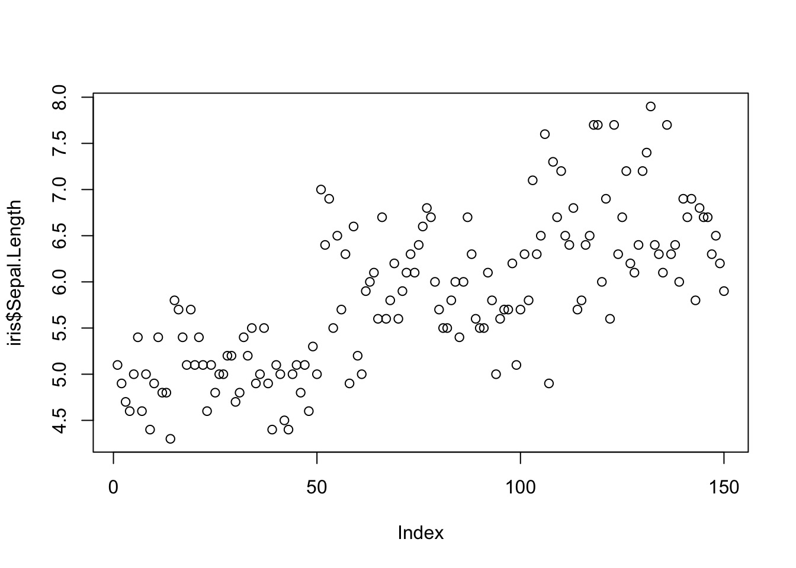
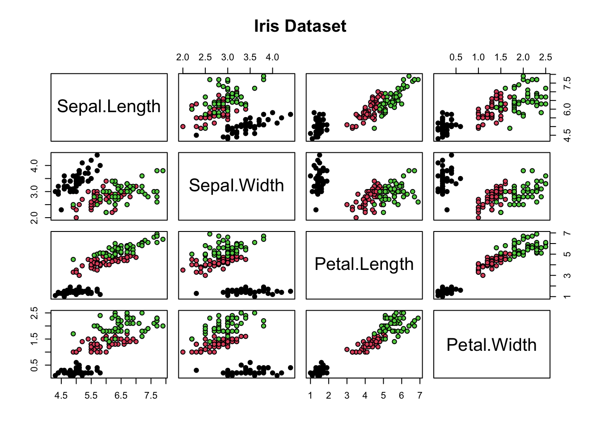
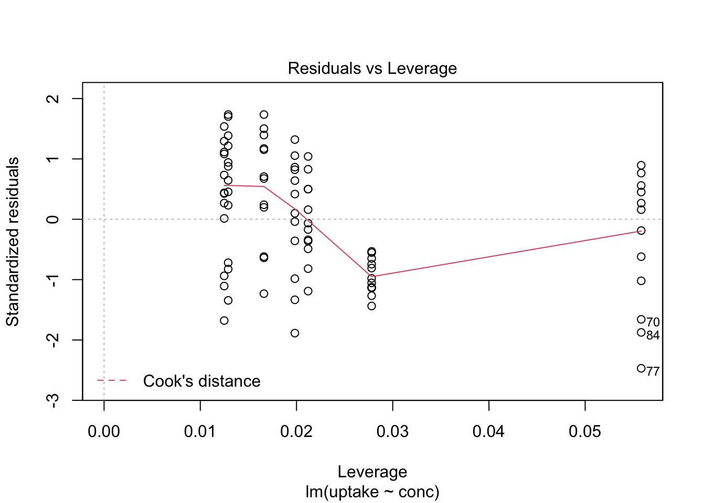
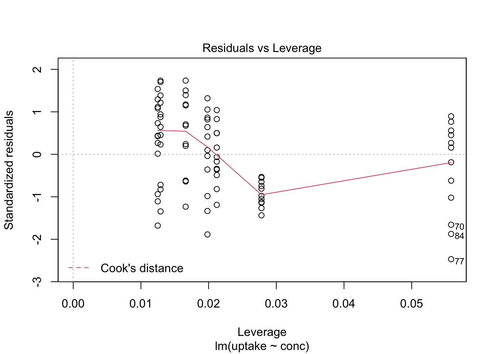
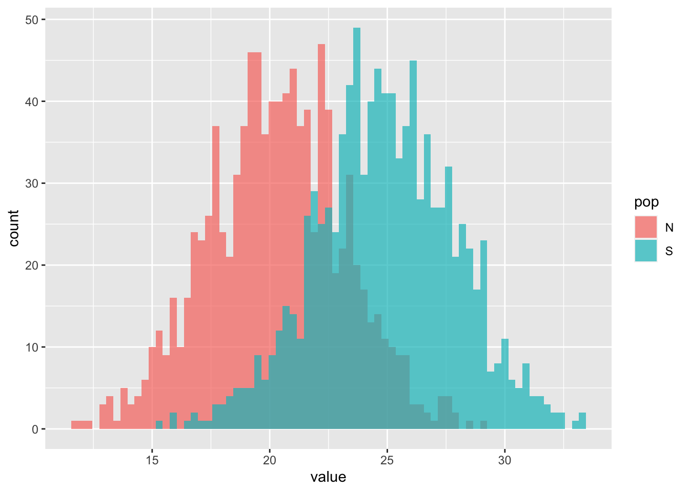
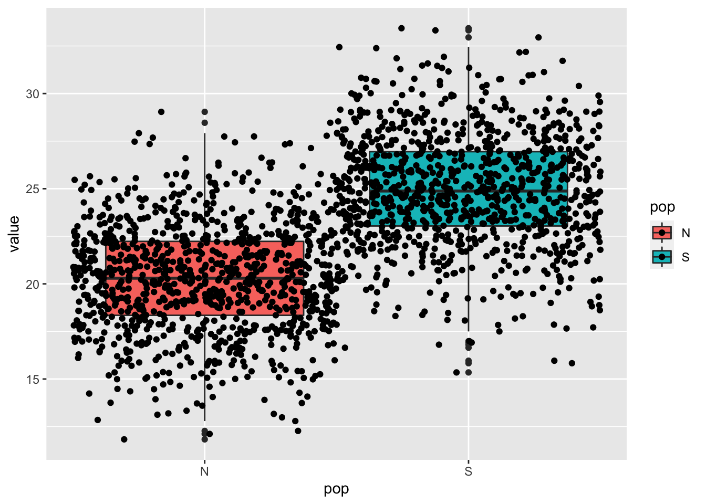

Reproducible Data Analysis in R
Ülo Maiväli1, Taavi Päll2
2021-09-03
1University of Tartu, Institute of Technology,
2University of Tartu, Institute of Biomedicine and Translational Medicine
Introduction
R is functional programming language and statistical environment.
About
R statistical language is based on S (R is GNU S). S was developed by John Chambers (mainly), Rick Becker and Allan Wilks of Bell Laboratories. The first version of S saw light in 1976. The aim of the S language was “to turn ideas into software, quickly and faithfully”. R was initially written by Robert Gentleman and Ross Ihaka at the University of Auckland Statistics Department. The project is relatively new, conceived in 1992, with an initial version released in 1994 and a first stable beta version in 2000.
R pros
- Just about any type of data analysis can be done in R.

There are about eight packages supplied with the R distribution. The number of available CRAN packages grows exponentially, featuring 9560 available packages as of 2016-11-21 .
- R contains advanced statistical routines not yet available in other packages @ref(fig:plotcranpackages).
- R provides reproducibility in data analysis, and yet is very flexible (everyone can write their parallel solution to any problem).
- R has the most comprehensive feature set available to visualize complex data.
- The results of any analytic step can easily be saved, manipulated, and used as input for additional analyses.
- R can import/export data from text files, pdf-s, database-management systems, statistical packages, and specialized data stores.
- R can also access data directly from web pages, social media sites, and a wide range of online data services.
- R provides a natural language for quickly programming recently published methods.
- Most operations in R are much quicker than manipulating tables in MS Excel or LO Calc.
- R has a large community of users – most questions can be quickly answered by googling.
- For a non-programmer R is easier to learn than Python, etc. (Ülo: most users do not program in R, and don’t need to.)
A key reason that R is a good thing is because it is a language. The power of language is abstraction. The way to make abstractions in R is to write functions (Burns, 2011).
R cons (none is the deal breaker):
- With R you must know exactly, what you want to do – in terms of your immediate atomic goals in data massage, methods of statistical analysis, and the overall strategy of analysis.
- It is like getting your own keys to daddy’s F-16 fighter plane. Get a setting wrong and boom!

Unlike your daddy’s F-16, it’s similarly annoying but safe to crash your R session. Image: The Brofessional
- R has uneven inbuilt help – but a lot of users who are willing to help you.
Alternatives
You can prepend “Some say, ..” to these statements:
- MS Excel might be better for inputting data into tables.
- Graphpad Prism is much more foolproof and easier to use as a statistical tool (but has limited functionality). There is a free web version of Graphpad – check it out.
- Python is more widely spread as a general purpose programming language – it is also arguably better in working with external databases (which we won’t).
Install R
As you can guess, it’s very straightforward: download and install R for your operation system from https://cran.r-project.org/.
Install RStudio
RStudio is a set of integrated tools designed to help you be more productive with R. It includes a console, syntax-highlighting editor that supports direct code execution, as well as tools for plotting, history, debugging and workspace management.
Download and install RStudio from https://www.rstudio.com/

RStudio window layout. The panel in the upper right contains your workspace. Any plots that you generate will show up in the panel in the lower right corner. The panel on the upper left corner is your source file. The panel on the lower left corner is the console.
Setup your project
To get started using R via RStudio it is suggested to organise your work to projects. Each project has their own working directory, workspace, history, and source documents. In order to create a new project:
- Open RStudio
- Select
Projectmenu from the upper right corner and either createNew ProjectorOpen Project. RStudio support page for using projects.

New Project menu
When you open a project in RStudio several actions are taken:
- A fresh new R session is started
- The current working directory is set to the project directory.
- Previously edited source documents are restored into editor tabs.
- The
.Rprofilefile in the project’s main directory (if any) is sourced by R, also the.RDataand.Rhistoryfiles in the project’s main directory are loaded. - Other RStudio settings (e.g. active tabs, splitter positions, etc.) are restored to where they were the last time the project was closed.
Folder structure of R project
- Create a directory structure to separate R code, data, reports, and output
- Treat data as read-only: do data-munging in R code, but always start with the source data
- Consider output figures and tables as disposable: the data plus the R script is the canonical source
- Keep function definitions and applications code separately

Example folder structure in R project
MyProject/
|-- scripts/ # contains R script
|-- data/ # contains raw data, read only
|-- output/ or results/ # modified data, rendered documents/reports
|-- plots/, graphs/ or figures/ # output graphs
|-- report.Rmd # expected to be in project rootWhere am I?
getwd() # shows active working directory.Using R projects together with here https://here.r-lib.org package in your scripts makes getwd() and setwd() useless.
There is a blue cube button in files tab in RStudio that directs you back to your project folder.
Getting help
You can get help for individual functions from R Documentation at the program’s command prompt by preceding R command with ?.
?getwd()Package documentation with list of all included functions can be accessed like this:
library(help = "readxl")In RStudio if you type the name of the function without parentheses eg. scale and hit the F1 key, the help page of the function is shown in the lower right panel.
Tips and tricks
- RStudio:
Helpmenu contains sectionCheatsheets. Ctrl + Enter(Cmd + Enteron a Mac) in RStudio: sends the current line (or current selection) from the editor to the console and runs it.Alt + -in RStudio: gives assignment operator<-.Ctrl + Shift + M(Shift + Cmd + M on a Mac) in RStudio: gives piping operator%>%.Ctrl + Shift + C(Ctrl + Cmd + C on a Mac) in RStudio: comment/uncomment lines.- RStudio cheat sheet with more tips.
- R is case-sensitive.
- Enter commands one at a time at the console or run a set of commands from the editor.
- Object names and column names cannot begin with a number.
- No spaces in object names! (use
.or_or-). - Using the backslash
\in a pathname on Windows – R sees the\as an escape character.setwd("C:\mydata")generates an error. Usesetwd("C:/mydata")orsetwd("C:\\mydata")instead.
Installing packages
To install package, run following command in your R console:
install.packages("packagename") # eg use "ggplot2" as packagenameRStudio offers also point-and-click style package install option: 
You will not be able to use a package until you load it with the library() function. After you have installed the packages, you can load any of the packages into your current R session with the library() command, e.g.
# Load library/package tidyr
library(tidyr)The library(tidyr) command makes available all the funtions in the tidyr package.
R packages are collections of one or more functions with clearly specifed task.
For example, the tidyr package contains following 77 functions:
library(tidyr)
ls("package:tidyr")## [1] "%>%" "as_tibble" "billboard"
## [4] "build_longer_spec" "build_wider_spec" "chop"
## [7] "complete" "complete_" "construction"
## [10] "contains" "crossing" "crossing_"
## [13] "drop_na" "drop_na_" "ends_with"
## [16] "everything" "expand" "expand_"
## [19] "expand_grid" "extract" "extract_"
## [22] "extract_numeric" "fill" "fill_"
## [25] "fish_encounters" "full_seq" "gather"
## [28] "gather_" "hoist" "last_col"
## [31] "matches" "nest" "nest_"
## [34] "nest_legacy" "nesting" "nesting_"
## [37] "num_range" "one_of" "pack"
## [40] "pivot_longer" "pivot_longer_spec" "pivot_wider"
## [43] "pivot_wider_spec" "population" "relig_income"
## [46] "replace_na" "separate" "separate_"
## [49] "separate_rows" "separate_rows_" "smiths"
## [52] "spread" "spread_" "starts_with"
## [55] "table1" "table2" "table3"
## [58] "table4a" "table4b" "table5"
## [61] "tibble" "tidyr_legacy" "tribble"
## [64] "unchop" "uncount" "unite"
## [67] "unite_" "unnest" "unnest_"
## [70] "unnest_auto" "unnest_legacy" "unnest_longer"
## [73] "unnest_wider" "unpack" "us_rent_income"
## [76] "who" "world_bank_pop"R repositories
R packages are available from 3 major repositories:
- CRAN
install.packages("ggplot2")- Bioconductor https://www.bioconductor.org/
# First run biocLite script fron bioconductor.org
source("https://bioconductor.org/biocLite.R")
# use 'http' in url if 'https' is unavailable.
biocLite("GenomicRanges", suppressUpdates=TRUE)- GitHub https://github.com/
library(devtools)
install_github("ramnathv/slidify") # ramnathv is the user, slidify the package.
# or alternatively, should we want only to install the missing package while avoiding any side effects that might result from loading the entire package, we use:
devtools::install_github("ramnathv/slidify")or
install.packages("githubinstall")
library(githubinstall)
githubinstall("AnomalyDetection")also
library(remotes): functions to install R packages from GitHub, Bitbucket, git, svn repositories, URL-s (also devtools package has functions to install packages from these resources).
NB! As we want to add extra data munging power to the base R, in our course, every R session should start with loading these packages:
library(dplyr)
library(tidyr)
library(reshape2)
library(ggplot2)
library(tibble)Common mistakes in loading packages
- Using the wrong case: help(), Help(), and HELP() - only the first will work.
- Forgetting quotation marks –
install.packages("gclus")works. - Using a function from a package that’s not loaded: library(“foo”)
- Forgetting to include the parentheses in a function call. For example
help()works, buthelpdoesn’t.
Entering function name without parentheses returns function internals. Very useful!
ruut <- function(x) x^2 # lets define function
ruut # display function internals## function(x) x^2ruut(3) # run function## [1] 9R objects
An R object is anything that can be assigned a value (data, functions, graphs, analytic results, and more). Every object has a class attribute telling R how to handle it. Common R data structures are: vectors (numerical, character, logical), matrices, data frames, and lists. The basic data structure in R is the vector.
Class of object
An R vector is characterized by a mode that describes its contents: logical, numeric, complex, character.
An R data structure is characterized by a class that describes its structure: matrix, array, factor, time-series, data frame, and list.
To determine the class of your object use class(object) - prints the class attribute of an object.
myobject <- list(1,"a")
class(myobject) # gives the data structure of object 'myobject'## [1] "list"R expressions
Syntactically correct R expressions (y <- x * 10) will be referred to as statements. R uses the symbol <- for assignments, rather than the typical = sign.
Here we create a vector named x containing five random numbers from a standard normal distribution.
x <- rnorm(5)
x## [1] 1.3761634 0.2861325 -0.8516899 1.7341453 -1.7049719y <- x * 10 # here we multiply numeric vector x by 10
y## [1] 13.761634 2.861325 -8.516899 17.341453 -17.049719Assigning value to object
a is an object containing character “b”:
a <- "b"
a## [1] "b"In #rstats, it's surprisingly important to realise that names have objects; objects don't have names pic.twitter.com/bEMO1YVZX0
— Hadley Wickham (@hadleywickham) May 16, 2016
You can overwrite objects (assign a new value to it):
a <- c("poodle","sheltie") # c(1,2) is a vector
a # a now contains two values: "poodle" and "sheltie"## [1] "poodle" "sheltie"
Poodle as innocent victim of overwriting @daily torygraph.
You can copy objects under new name:
b <- a
b## [1] "poodle" "sheltie"You can use output of function 1 as input to function 2:
foo <- function(x) x^4 # function 1
foo(x = 2)## [1] 16d <- sqrt(foo(2)) # function 'sqrt' calculates square root
d## [1] 4Never use a function name as object name –
cvs.c(). You rewrite that function in your environment and you get into trouble!
Coercing
a <- "42"
a## [1] "42"class(a)## [1] "character"b <- as.numeric(a)
b## [1] 42class(b)## [1] "numeric"b <- as.factor(a)
b## [1] 42
## Levels: 42class(b)## [1] "factor"To coerce the factor ss with two levels 10 and 20 into numbers you must convert it to character first:
ss <- as.factor(c(10,20))
ss## [1] 10 20
## Levels: 10 20# lets see what happens if we try to convert ss directly to numeric
as.numeric(ss)## [1] 1 2as.numeric(as.character(ss))## [1] 10 20Factor variables are encoded as integers in their underlying representation. So a variable like “poodle” and “sheltie” will be encoded as 1 and 2 in the underlying representation more about factors and stringsAsFactors option when importing a data.frame.
Factors are used to group data by their levels for analysis (e.g. linear model: lm()) & graphing. In earlier versions of R, storing character data as a factor was more space efficient if there is even a small proportion of repeats. However, identical character strings now share storage, so the difference is small in most cases. Nominal variables are categorical, without an implied order.
diabetes <- c("Type1", "Type2", "Type1", "Type1") # diabetes is a factor with 2 levels
diabetes # a character vector## [1] "Type1" "Type2" "Type1" "Type1"class(diabetes)## [1] "character"diabetes <- factor(diabetes) # coerce to factor
diabetes # factors## [1] Type1 Type2 Type1 Type1
## Levels: Type1 Type2class(diabetes)## [1] "factor"Encoding diabetes vector as a factor stores this vector as 1, 2, 1, 1 and associates it with 1 = Type1 and 2 = Type2 internally (the assignment is alphabetical). Any analyses performed on the vector diabetes will treat the variable as nominal and select the statistical methods appropriate for this level of measurement.
Ordinal variables imply order but not amount. Status (poor, improved, excellent). For vectors representing ordinal variables, add ordered = TRUE to the factor() function.
status <- c("Poor", "Improved", "Excellent", "Poor")
status## [1] "Poor" "Improved" "Excellent" "Poor"For ordered factors, override the alphabetic default by specifying levels.
status <- factor(status, ordered = TRUE, levels = c("Poor", "Improved", "Excellent")) # Assigns the levels as 1 = Poor, 2 = Improved, 3 = Excellent.
status## [1] Poor Improved Excellent Poor
## Levels: Poor < Improved < ExcellentContinuous variables have order & amount (class: numeric or integer). Numeric variables can be re-coded as factors. If sex was coded as 1 for male and 2 for female in the original data,
sex <- sample(c(1,2), 21, replace = TRUE) # lets generate data
sex## [1] 1 2 1 2 1 2 1 1 2 1 1 1 2 1 2 2 2 2 2 1 1then, factor() converts the variable to an unordered factor.
The order of the labels must match the order of the levels. Sex would be treated as categorical, the labels “Male” and “Female” would appear in the output instead of 1 and 2
sex <- factor(sex, levels = c(1, 2), labels = c("Male", "Female"))
sex## [1] Male Female Male Female Male Female Male Male Female Male
## [11] Male Male Female Male Female Female Female Female Female Male
## [21] Male
## Levels: Male FemaleData structures
- Atomic vectors are arrays that contain a single data type (logical, real, complex, character). Each of the following is a one-dimensional atomic vector:
passed <- c(TRUE, FALSE, FALSE, FALSE, TRUE, TRUE, TRUE) # random sequence
class(passed)## [1] "logical"ages <- c(53, 51, 25, 67, 66, 41, 62, 42) # random numbers
class(ages)## [1] "numeric"namez <- c("Marina", "Allar", "Siim", "Mart", "Mailis", "Eiki", "Urmas") # random names, names is R function!
class(namez) ## [1] "character"A scalar is an atomic vector with a single element. So k <- 2 is a shortcut for k <- c(2).
- A matrix is an atomic vector that has a dimension attribute,
dim(), containing two elements (nrow, number of rows andncol, number of columns)
matrix(ages, nrow = 2)## [,1] [,2] [,3] [,4]
## [1,] 53 25 66 62
## [2,] 51 67 41 42- Lists are collections of atomic vectors and/or other lists.
mylist <- list(passed, ages, namez)
mylist## [[1]]
## [1] TRUE FALSE FALSE FALSE TRUE TRUE TRUE
##
## [[2]]
## [1] 53 51 25 67 66 41 62 42
##
## [[3]]
## [1] "Marina" "Allar" "Siim" "Mart" "Mailis" "Eiki" "Urmas"We can assign names to list objects:
names(mylist) <- c("passed", "ages", "namez")
mylist## $passed
## [1] TRUE FALSE FALSE FALSE TRUE TRUE TRUE
##
## $ages
## [1] 53 51 25 67 66 41 62 42
##
## $namez
## [1] "Marina" "Allar" "Siim" "Mart" "Mailis" "Eiki" "Urmas"- Data frames are a special type of list, where each atomic vector in the collection has the same length. Each vector represents a column (variable) in the data frame.
exam <- data.frame(name = namez, passed = passed)
exam## name passed
## 1 Marina TRUE
## 2 Allar FALSE
## 3 Siim FALSE
## 4 Mart FALSE
## 5 Mailis TRUE
## 6 Eiki TRUE
## 7 Urmas TRUE
Illustration of R data types. Image: http://yzc.me/2015/12/11/r-intro-1/
Selecting by index
Index gives the address that specifies the elements of vector/matrix/list or data.frame, which are then automatically selected.
- Indexing begins at 1 (not 0) in R
- Indexing operators in R are square brackets – ‘[’,
[[and dollar sign$
[allows selecting more than one element, whereas[[and$select only one element.- Empty index [,] means “select all” –
a[,1]means “select all rows and 1st column froma”.
During initial data exploration it is often necessary to have a look how the head of your table looks like, for this you can use convenience methods head and tail which are returning first and last elements of a object, respectively:
head(mtcars) # Prints first 6 elements (rows) as default## mpg cyl disp hp drat wt qsec vs am gear carb
## Mazda RX4 21.0 6 160 110 3.90 2.620 16.46 0 1 4 4
## Mazda RX4 Wag 21.0 6 160 110 3.90 2.875 17.02 0 1 4 4
## Datsun 710 22.8 4 108 93 3.85 2.320 18.61 1 1 4 1
## Hornet 4 Drive 21.4 6 258 110 3.08 3.215 19.44 1 0 3 1
## Hornet Sportabout 18.7 8 360 175 3.15 3.440 17.02 0 0 3 2
## Valiant 18.1 6 225 105 2.76 3.460 20.22 1 0 3 1tail(mtcars, n = 3) # Prints last 3 elements (rows)## mpg cyl disp hp drat wt qsec vs am gear carb
## Ferrari Dino 19.7 6 145 175 3.62 2.77 15.5 0 1 5 6
## Maserati Bora 15.0 8 301 335 3.54 3.57 14.6 0 1 5 8
## Volvo 142E 21.4 4 121 109 4.11 2.78 18.6 1 1 4 2Tip: you can use tail to return the very last element of a object with unknown length.
tail(LETTERS, n = 1)## [1] "Z"Vectors
The combine function c() is used to form the vector.
a <- c(1, 2, 5, -3, 6, -2, 4)
b <- c("one", "two", "three")
d <- c(TRUE,TRUE,TRUE,FALSE,TRUE,FALSE) # We use d instead of c as vector name. Why?a is a numeric vector, b is a character vector, and d is a logical vector. The data in a vector can be only one type (numeric, character, or logical).
You can refer to elements of a vector:
a[c(2, 4)] # Refers to the second and fourth elements of vector a.## [1] 2 -3'['(a, c(2,4)) # [ is a function! This is very handy in case of piping, as we see in the upcoming lessons.## [1] 2 -3We can sort/order vector:
sort(a, decreasing = FALSE) # sorts vector in ascending order## [1] -3 -2 1 2 4 5 6We can extract uniqe elements of a vector:
d## [1] TRUE TRUE TRUE FALSE TRUE FALSEunique(d) # Returns a vector, data frame or array like d but with duplicate elements removed.## [1] TRUE FALSECreate sequence:
seq(2, 5, by = 0.5)## [1] 2.0 2.5 3.0 3.5 4.0 4.5 5.0A complex sequence:
rep(1:4, times = 2)## [1] 1 2 3 4 1 2 3 4Repeat each element of a vector:
rep(1:2, each = 3)## [1] 1 1 1 2 2 2Repeat elements of a vector:
rep(c("poodle","sheltie"), each = 3, times = 2)## [1] "poodle" "poodle" "poodle" "sheltie" "sheltie" "sheltie" "poodle"
## [8] "poodle" "poodle" "sheltie" "sheltie" "sheltie"Data frame
data frame: a collection of vectors where different columns can contain different modes of data (numeric, character, and so on). Each vector contains only 1 mode of data (vector1 <- c("a", 2, 3.4)is automatically coerced tochr, but can be manually coerced to numeric or factor). The data frame columns are variables, and the rows are observations. Vectors are bound into matrix/data.frame vertically, with the direction from top to bottom. Column = vector.as.matrix()has default argumentbyrow = FALSE, change this to fill matrix by rows.tibble::data_frame()is a more modern version of data.frame (slight differences for the better)as_data_frame()converts to it.data_frame()does less thandata.frame():- it never changes the type of the inputs (e.g. it never converts strings to factors!),
- it never changes the names of variables, and it never creates
row.names().
Tibbles have a print method that shows only the first 10 rows, and all the columns that fit on screen. This makes it much easier to work with large data.

Iris dataset contains sepal and petal measurements of three iris species.
library(dplyr) # tbl_df
tbl_df(iris)## # A tibble: 150 x 5
## Sepal.Length Sepal.Width Petal.Length Petal.Width Species
## <dbl> <dbl> <dbl> <dbl> <fct>
## 1 5.1 3.5 1.4 0.2 setosa
## 2 4.9 3 1.4 0.2 setosa
## 3 4.7 3.2 1.3 0.2 setosa
## 4 4.6 3.1 1.5 0.2 setosa
## 5 5 3.6 1.4 0.2 setosa
## 6 5.4 3.9 1.7 0.4 setosa
## 7 4.6 3.4 1.4 0.3 setosa
## 8 5 3.4 1.5 0.2 setosa
## 9 4.4 2.9 1.4 0.2 setosa
## 10 4.9 3.1 1.5 0.1 setosa
## # … with 140 more rowsclass(as.data.frame(tbl_df(iris)))## [1] "data.frame"library(tibble)
height <- c(187, 190, 156)
name <- c("Jim", "Joe", "Jill")
my_tab <- data_frame(name, height) # object names are used as column names
my_tab## # A tibble: 3 x 2
## name height
## <chr> <dbl>
## 1 Jim 187
## 2 Joe 190
## 3 Jill 156summary(my_tab) # Prints a summary of data## name height
## Length:3 Min. :156.0
## Class :character 1st Qu.:171.5
## Mode :character Median :187.0
## Mean :177.7
## 3rd Qu.:188.5
## Max. :190.0names(my_tab) # Prints column names## [1] "name" "height"nrow(my_tab) # number of rows## [1] 3ncol(my_tab)## [1] 2dim(my_tab)## [1] 3 2Indexing data.frames
We use R mtcars dataset to illustrate indexing of a data.frame:
class(mtcars)## [1] "data.frame"dim(mtcars) # what's the size of the data.frame## [1] 32 11mtc <- mtcars[sample(1:nrow(mtcars), 6), ] # select a manageable subset
mtc## mpg cyl disp hp drat wt qsec vs am gear carb
## Chrysler Imperial 14.7 8 440.0 230 3.23 5.345 17.42 0 0 3 4
## Volvo 142E 21.4 4 121.0 109 4.11 2.780 18.60 1 1 4 2
## Merc 450SLC 15.2 8 275.8 180 3.07 3.780 18.00 0 0 3 3
## Fiat 128 32.4 4 78.7 66 4.08 2.200 19.47 1 1 4 1
## Ferrari Dino 19.7 6 145.0 175 3.62 2.770 15.50 0 1 5 6
## AMC Javelin 15.2 8 304.0 150 3.15 3.435 17.30 0 0 3 2Here we select columns:
mtc[,2] # selects 2nd column and returns vector## [1] 8 4 8 4 6 8mtc[3] # selects 3nd column and returns data.frame## disp
## Chrysler Imperial 440.0
## Volvo 142E 121.0
## Merc 450SLC 275.8
## Fiat 128 78.7
## Ferrari Dino 145.0
## AMC Javelin 304.0mtc[, "hp"] # selects column named "hp"## [1] 230 109 180 66 175 150mtc$cyl # selects column named "cyl"## [1] 8 4 8 4 6 8df <- data.frame(M = c(2, 3, 6, 3, 34), N = c(34, 3, 8, 3, 3), L = c(TRUE, FALSE, TRUE, FALSE, TRUE))
df## M N L
## 1 2 34 TRUE
## 2 3 3 FALSE
## 3 6 8 TRUE
## 4 3 3 FALSE
## 5 34 3 TRUEdf[df$M == 34,] # selects rows from A that have value == 34## M N L
## 5 34 3 TRUEdf[1:2, "N"] # selects rows 1 through 2 from column "A"## [1] 34 3rownames(df) <- letters[1:5] # letters vector gives us lower case letters
df[rownames(df) == "c",] # selects row named "c"## M N L
## c 6 8 TRUEdf[-(2:4),] # drops rows 2 to 4 (incl)## M N L
## a 2 34 TRUE
## e 34 3 TRUEdf[, -2] # drops col 2, outputs vector! ## M L
## a 2 TRUE
## b 3 FALSE
## c 6 TRUE
## d 3 FALSE
## e 34 TRUEdf[df$M == 6,] # selects all rows that contain 6 in column named M## M N L
## c 6 8 TRUEdf[df$M != 6,] # selects all rows that do not contain 6 in column named M## M N L
## a 2 34 TRUE
## b 3 3 FALSE
## d 3 3 FALSE
## e 34 3 TRUEdf[df$L==T,] # selects all rows where L is TRUE (T)## M N L
## a 2 34 TRUE
## c 6 8 TRUE
## e 34 3 TRUEWhat if we have duplicated rows or elements in our data frame or vector (and we want to get rid of them)?
?duplicated # determines which elements of a vector or data frame are duplicates of elements with smaller subscriptsdf[!duplicated(df),] # removes second one of the duplicated rows from df, we have to use ! to negate logical evaluation## M N L
## a 2 34 TRUE
## b 3 3 FALSE
## c 6 8 TRUE
## e 34 3 TRUEdf[df$M > median(df$N) & df$M < 25,] # selects rows where df$M value is > median df$N AND df$M value < 25## M N L
## c 6 8 TRUEdf[df$M > median(df$N) | df$M == 34,] # selects rows where df$M value is > median df$N OR df$M value == 34## M N L
## c 6 8 TRUE
## e 34 3 TRUEsum(df$M[df$L==T]) # sums column df$M at rows where column 'L' is TRUE (T)## [1] 42A vector can be extracted by $ and worked on:
Mean.height <- mean(my_tab$height)
Mean.height # Prints the answer## [1] 177.6667New vectors can be bound into a data.frame:
my_tab$weight <- c(87, 96, 69) # Now there are 3 columns in my_tab
my_tab## # A tibble: 3 x 3
## name height weight
## <chr> <dbl> <dbl>
## 1 Jim 187 87
## 2 Joe 190 96
## 3 Jill 156 69my_tab$experiment <- factor("A") # the 4th col contains a factor with a single level "A"
levels(my_tab$experiment) # prints the unique levels in a factor vector## [1] "A"Matrix
Matrix: a collection of data elements, which are all numeric, character, or logical.
Why use matrix? The choice between matrix and data.frame comes up only if you have data of the same type.
The answer depends on what you are going to do with the data in data.frame/matrix. If it is going to be passed to other functions then the expected type of the arguments of these functions determine the choice.
Matrices are more memory efficient:
m <- matrix(1:4, 2, 2)
d <- as.data.frame(m)
object.size(m)## 232 bytesobject.size(d)## 864 bytes- Matrices are a necessity if you plan to do any linear algebra-type of operations.
- Data frames are more convenient if you frequently refer to its columns by name (via the
$operator). - Data frames are also better for reporting tabular data as you can apply formatting to each column separately.
n <- matrix(rnorm(30), ncol = 5)
dim(n)## [1] 6 5n## [,1] [,2] [,3] [,4] [,5]
## [1,] 0.9625717 0.08574938 1.4015132 -0.1912197 0.8754069
## [2,] -0.3202461 -0.37379322 -1.0499794 0.3187382 1.1420646
## [3,] 1.0826235 0.32876437 -1.0656420 -0.0214719 -1.9810216
## [4,] 0.6353925 -0.17265983 -0.3996834 -1.4182507 -0.3312632
## [5,] -0.3768512 0.82532371 0.9483084 1.1160782 -0.1887763
## [6,] -1.0271560 -0.18793586 0.5508250 -0.6006577 0.8535260exam # we created previously data.frame exam## name passed
## 1 Marina TRUE
## 2 Allar FALSE
## 3 Siim FALSE
## 4 Mart FALSE
## 5 Mailis TRUE
## 6 Eiki TRUE
## 7 Urmas TRUEclass(exam)## [1] "data.frame"m <- as.matrix(exam) # coerce data.frame with n,m dimension to a matrix with n,m dimension
m## name passed
## [1,] "Marina" "TRUE"
## [2,] "Allar" "FALSE"
## [3,] "Siim" "FALSE"
## [4,] "Mart" "FALSE"
## [5,] "Mailis" "TRUE"
## [6,] "Eiki" "TRUE"
## [7,] "Urmas" "TRUE"t(m) # transposes a matrix## [,1] [,2] [,3] [,4] [,5] [,6] [,7]
## name "Marina" "Allar" "Siim" "Mart" "Mailis" "Eiki" "Urmas"
## passed "TRUE" "FALSE" "FALSE" "FALSE" "TRUE" "TRUE" "TRUE"List
A list is an ordered collection of objects. Basically, in R you can shove any data structure into list. E.g. list may contain a combination of vectors, matrices, data frames, and even other lists, (poodles?). You can specify elements of the list by:
mylist[[2]]## [1] 53 51 25 67 66 41 62 42mylist[["ages"]]## [1] 53 51 25 67 66 41 62 42mylist$ages## [1] 53 51 25 67 66 41 62 42As you can see all these above expressions give identical result
all.equal(mylist[[2]], mylist[["ages"]], mylist$ages)## [1] TRUEIndexing lists
Indexing by [ is similar to atomic vectors and selects a list of the specified element(s). Both [[ and $ select a single element of the list (e.g. a single vector or data frame).
mylist # here we go back to our mylist object## $passed
## [1] TRUE FALSE FALSE FALSE TRUE TRUE TRUE
##
## $ages
## [1] 53 51 25 67 66 41 62 42
##
## $namez
## [1] "Marina" "Allar" "Siim" "Mart" "Mailis" "Eiki" "Urmas"mylist[[1]] # the first element of list mylist## [1] TRUE FALSE FALSE FALSE TRUE TRUE TRUEmylist[c(1, 3)] # a list containing elements 1 and 3 of mylist## $passed
## [1] TRUE FALSE FALSE FALSE TRUE TRUE TRUE
##
## $namez
## [1] "Marina" "Allar" "Siim" "Mart" "Mailis" "Eiki" "Urmas"mylist$ages # the element of mylist named ages## [1] 53 51 25 67 66 41 62 42Difference between using [ and [[ for subsetting a list: Square brackets [ return subset of list as list:
mylist[1]## $passed
## [1] TRUE FALSE FALSE FALSE TRUE TRUE TRUEclass(mylist[1]) # returns list with one object## [1] "list"mylist[c(1,2)]## $passed
## [1] TRUE FALSE FALSE FALSE TRUE TRUE TRUE
##
## $ages
## [1] 53 51 25 67 66 41 62 42class(mylist[c(1,2)]) # returns list with two objects## [1] "list"Double square brackets [[ return single list object/value:
mylist[[1]] # returns list object ## [1] TRUE FALSE FALSE FALSE TRUE TRUE TRUEclass(mylist[[1]]) # logical vector in this case## [1] "logical"Warning: if you use double square brackets [[ instead of [ with index vector e.g. c(3,2) we get 2nd element from 3rd list object:
mylist[[c(3,2)]]## [1] "Allar"Be careful, if you won’t get Error in ... : subscript out of bounds, your script proceeds with this value and returns error in some of the next lines or returns wrong result.
Query names of list objects:
names(mylist)## [1] "passed" "ages" "namez"Set/change names of list objects:
names(mylist) <- c("a","b","c")
names(mylist)## [1] "a" "b" "c"New name for nth list object:
names(mylist)[2] <- c("poodles")
names(mylist)## [1] "a" "poodles" "c"Output from statistical tests
Output of statistical tests in R is usually a list. Here we perform t test to compare two vectors a and b.
a <- rnorm(10) # random normal vector with mean 0
b <- rnorm(10,2) # random normal vector with mean 2
t.result <- t.test(a, b) # t test
str(t.result) # str() displays the internal structure of an R object## List of 10
## $ statistic : Named num -3.45
## ..- attr(*, "names")= chr "t"
## $ parameter : Named num 16.6
## ..- attr(*, "names")= chr "df"
## $ p.value : num 0.00317
## $ conf.int : num [1:2] -2.931 -0.703
## ..- attr(*, "conf.level")= num 0.95
## $ estimate : Named num [1:2] 0.177 1.993
## ..- attr(*, "names")= chr [1:2] "mean of x" "mean of y"
## $ null.value : Named num 0
## ..- attr(*, "names")= chr "difference in means"
## $ stderr : num 0.527
## $ alternative: chr "two.sided"
## $ method : chr "Welch Two Sample t-test"
## $ data.name : chr "a and b"
## - attr(*, "class")= chr "htest"t.result$conf.int # extracts an element from the list## [1] -2.9305769 -0.7028183
## attr(,"conf.level")
## [1] 0.95t.result$p.value # p.value## [1] 0.003168964Base graphics
Some say that R base graphics is only good for quick and dirty data exploration, but not very straightforward for creating polished publication quality graphs (but you can master it if you really dive into it).
library(help = "graphics") # complete list of functionsBase R has extensive set of graphical parameters, which can be set or query using function par:
par() # set or look at the available graphical parametersScatterplot
Scatterplots can be created using plot(). If we use plot() command with only one variable, we get graph with values versus index. We can use this representation to find out where we have gross outliers in our variable.
plot(iris$Sepal.Length)
Even more sensible use of scatterplot is visualizing relationship between variables. Here, we explore the relationship between sepal length and width in different iris species.
plot(iris$Sepal.Length, iris$Sepal.Width) Looks OK-ish. But we don’t know witch dot belongs to which of the three iris species (setosa, versicolor, virginica).
Looks OK-ish. But we don’t know witch dot belongs to which of the three iris species (setosa, versicolor, virginica).
We can fix that with col= argument, where iris$Species column is used as the factor by whose levels to color the dots (R will automatically order factor levels in alphabetical order: setosa, versicolor, virginica). palette() gives you the colors and their order, and it allows you to manipulate the color palette (see ?palette).
plot(iris$Sepal.Length, iris$Sepal.Width,
col = iris$Species, # dots are colored by species
pch = 16, # we use filled dots instead of default empty dots
las = 1) # horizontal y-axis labels
palette()## [1] "black" "#DF536B" "#61D04F" "#2297E6" "#28E2E5" "#CD0BBC" "#F5C710"
## [8] "gray62"legend("topright", # we place legend to the top right corner of the plot
legend = levels(iris$Species), # species names in the legend
pch = 16, # dot shape
bty = "n", # the type of box to be drawn around the legend: "n" no box
col = 1:3) # new colors are added with numbers 1 to 3. This will work like using a factor.We can plot all variable pairs into a single matrix of scatterplots:
pairs(iris[1:4], # same output can be achieved also by using just plot()
main = "Iris Dataset",
pch = 21, # dots need to be big enough to display color
bg = iris$Species) # color by species
Matrix scatterplots can be created using the R formula interface, which allows better control over variables we want to explore. We use “Swiss Fertility and Socioeconomic Indicators (1888)” data as example.
head(swiss)## Fertility Agriculture Examination Education Catholic
## Courtelary 80.2 17.0 15 12 9.96
## Delemont 83.1 45.1 6 9 84.84
## Franches-Mnt 92.5 39.7 5 5 93.40
## Moutier 85.8 36.5 12 7 33.77
## Neuveville 76.9 43.5 17 15 5.16
## Porrentruy 76.1 35.3 9 7 90.57
## Infant.Mortality
## Courtelary 22.2
## Delemont 22.2
## Franches-Mnt 20.2
## Moutier 20.3
## Neuveville 20.6
## Porrentruy 26.6Here we plot matrix scatterplot using formula method from function example ?pairs, if left hand side (dependent variable) of the formula is empty, we get all combinations of variables in the right hand side:
pairs(~ Fertility + Education + Catholic, data = swiss,
subset = Education < 20, main = "Swiss data, Education < 20") # formula method from function example 
Scatterplots are also ideal for visualising relationships between independent and dependent variables. We use R in-house dataset CO2 showing carbon dioxide uptake in grass plants.
We plot plant CO2 uptake versus its concentration and add calculated linear model fit to the scatterplot:
plot(x = CO2$conc, y = CO2$uptake, #
pch = 16, col = "blue", # dot type and color
main = "Carbon Dioxide Uptake in Grass Plants", # scatterplot
las = 1) # horizontal y-axis labels
mod1 <- lm(uptake~conc, data = CO2) # linear model fit
abline(mod1, col = "red", lty = 2, lwd = 2) # add lin model fit to the scatterplot
coefs <- coef(mod1) # linear model coefficients
b0 <- round(coefs[1], 2) # round for printing
b1 <- round(coefs[2], 2) # round for printing
r2 <- round(summary(mod1)$r.squared, 2) # r squared
eqn <- bquote(italic(y) == .(b0) + .(b1)*italic(x) * "," ~~ r^2 == .(r2)) # formula and rsuared for printing
text(750, 20, labels = eqn) # add equation to the plot
As we can see in the upper plot, the linear model does not explain the relationship between conc and uptake very well. Therefore we fit exponential function, which seems to fit much better to these data.
plot(uptake ~ conc,
data = CO2,
pch = 16, col = "blue",
main = "Carbon Dioxide Uptake in Grass Plants",
las = 1) # horizontal y-axis labels
lines(x = CO2$conc, y = predict(mod1), col = "red", lty = 2, lwd = 2) # add linear model fitted line
mod2 <- nls(uptake ~ SSlogis(conc, Asym, xmid, scal), data = CO2) # nonlin fit using SSlogis selfstart model
xvals <- seq(from = 95, to = 1000, by = 3) # new x values for which we want model prediction
lines(x = xvals, y = predict(mod2, list(conc = xvals)), col = "green", lty = 2, lwd = 2) # add nonlin fit line
legend("bottomright", legend = c("linear model", "exponential model") , lty = 2, col = c("red", "green"), bty = "n", lwd = 2) # add legend to the plot
Histogram
To illustrate hist function we use 2013 Tartu cross-country skiing marathon 63 km times (Aeg in Estonian).
load("data/Tartu_Maraton_2013.RData")
head(tm_2013)## # A tibble: 6 x 7
## Koht Nr Nimi Elukoht Aeg Vanuseklass Kuubik
## <int> <int> <chr> <chr> <chr> <chr> <dbl>
## 1 NA 0 Laugal, Emil Harju maakond <NA> <NA> 0
## 2 5500 6083 Miezys, Audrius Leedu 6:25:42 M50 0
## 3 1 4 Oestensen, Simen Norra 2:45:01 M21 1
## 4 2 1 Brink, Joergen Rootsi 2:45:02 M35 1.00
## 5 3 2 Aukland, Anders Norra 2:45:02 M40 1.00
## 6 4 50 Näss, Börre Norra 2:45:02 M21 1.00We first convert times in H:M:S format into periods using hms() function from lubridate package, then convert them to period objects with as.duration function (ibid.). as.duration gives us seconds, which we convert to decimal hours by dividing with 3600s (== 1h).
library(lubridate) # for easy time manipulation
times <- hms(tm_2013$Aeg[-1])
times <- unclass(as.duration(times))/3600 # unclass gives us numbers (time in seconds), which we further divide by 3600 to get time in hoursLets have a look at TP-s finish time and convert it into decimal hours:
tm_2013[tm_2013$Nimi=="Päll, Taavi",]$Aeg # TP-s time in H:M:S## [1] "4:34:20"tp_time <- unclass(as.duration(hms(tm_2013[tm_2013$Nimi=="Päll, Taavi",]$Aeg)))/3600 Now we plot a histogram of Tartu skiing marathon times and add a vertical line at TP-s time:
hist(times,
breaks = 100, # seems to be a good granularity
main = "Tartu cross-country skiing\nmarathon 2013, 63 km", # plot title. Pro tip: '\n' works as enter.
xlab = "Time, h", # x-axis label: time in seconds
las = 1) # horizontal y-axis labels
abline(v = tp_time, col = "red", lwd = 2) # add red vertical line
hist(times, breaks = seq(2, 10, by = 0.25)) # breaks after every 15 minBoxplot
Boxplots can be created, unsurprisingly, by boxplot:
boxplot(iris$Sepal.Length ~ iris$Species,
las = 1,
xlab = "Species",
ylab = "Sepal Length",
main = "Sepal Length by Species in Iris",
ylim = c(0, max(iris$Sepal.Length)))
Bargraphs
This is no-brainer! Base graphics function barplot creates for us barplots with either vertical or horizontal bars:
load("data/Rio2016_medals.RData") # we use rio medals data barplot(medals$Total,
names.arg = medals$country_un, # country abbreviations, x-axis labels
horiz = TRUE, # horozontal y-axis
cex.names = 0.5, # smaller labels
las = 1, # horizontal axis labels
col = 4, # fill color nr 4 from default palette = "blue"
xlab = "Total number of medals", # x-axis label
main = "Country ranking by Rio 2016 medals", # main title
sub = "Ranking also takes into account the number of gold, silver and bronze medals.", # subtitle or ingraph caption
cex.sub = 0.5) # labels perpendicular to x-axis
Combine multiple subplots
Here we show, how to combine multiple subplots into one overall graph in base R, using either the par() or layout() function. Plotting linear model fit object outputs four separate diagnostic plots – “Residuals vs Fitted”, “Normal Q-Q”, “Scale-Location” and “Residuals vs Leverage”:
plot(mod1) 

By telling graphics device to create four slots, arranged 2x2, in our plot window, using par function argument mfrow=c(nr, nc), we can tidy up all this information little bit:
par(mfrow=c(2,2)) # number of rows, number of columns
plot(mod1) # plots are arranged into matrix in order of appearance
dev.off()## quartz_off_screen
## 2layout() function specifies graph layout using matrix. Here we create 2x2 layout specified by matrix – plots one and two will appear in the first column and third plot will be placed into second column and occupies two slots:
layout(matrix(c(1,2,3,3), 2, 2))
plot(iris$Sepal.Length, iris$Sepal.Width, col = iris$Species, pch = 16, las = 1)
plot(uptake ~ conc, data = CO2, pch = 16, col = "blue", main = "Carbon Dioxide Uptake in Grass Plants", las = 1)
barplot(medals$Total,
names.arg = medals$country_un, # country abbreviations, x-axis labels
horiz = TRUE, # horozontal y-axis
cex.names = 0.5, # smaller labels
las = 1, # horizontal axis labels
col = 4, # fill color nr 4 from default palette = "blue"
xlab = "Total number of medals", # x-axis label
main = "Country ranking by Rio 2016 medals", # main title
sub = "Ranking also takes into account the number of gold, silver and bronze medals.", # subtitle or ingraph caption
cex.sub = 0.5)dev.off()## quartz_off_screen
## 2If you want to revert your par(mfrow=... to the original settings with single slot in graphics device, use following approach:
Either run par again with mfrow=c(1,1) settings
par(mfrow=c(1,1))Or assign original settings to object and after you have done your multiplot load these setting using par:
originalpars <- par(mfrow=c(1,2)) # direct current mfrow to originalpars object
hist(rnorm(100))
plot(rnorm(100),rnorm(100))dev.off()## quartz_off_screen
## 2par(originalpars) # loads/restores previous parameters
originalpars # we have only mfrow here ## $mfrow
## [1] 1 1Save plots
To save a plot into file you have to open the file and plot device first and then plot any graphics. Base R has graphics devices for BMP, JPEG, PNG and TIFF format bitmap files and for PDF.
png(filename = "Rplot%03d.png",
width = 480, height = 480, units = "px", pointsize = 12,
bg = "white", res = NA, ...,
type = c("cairo", "cairo-png", "Xlib", "quartz"), antialias)We want to save our disposable output files to directory output, therefore we first check if we already have this directory, if not then we create it:
if(!dir.exists("output")) dir.create("output")In case of .png:
png(file = "output/iris_sepal.png", width = 1200, height = 800, res = 300)
plot(iris$Sepal.Length, iris$Sepal.Width, col = iris$Species, pch = 16, las = 1)
dev.off()## quartz_off_screen
## 2pdf(file = if(onefile) "Rplots.pdf" else "Rplot%03d.pdf",
width, height, onefile, family, title, fonts, version,
paper, encoding, bg, fg, pointsize, pagecentre, colormodel,
useDingbats, useKerning, fillOddEven, compress)width, height – the width and height of the graphics region in inches. The default values are 7.
pdf(file = "output/co2_uptake.pdf")
plot(uptake ~ conc, data = CO2, pch = 16, col = "blue", main = "Carbon Dioxide Uptake in Grass Plants", las = 1)
dev.off()## quartz_off_screen
## 2list.files("output")## [1] "co2_uptake.pdf" "iris_sepal.png"Getting data in and out of R

Really? Photo: Banksy
Import tabular data
read.table, read.csv, read.delim functions allow to create data frames, where different columns may contain different type of data – numeric, character etc. read.table is the basic function with values separated by white space "" (one or more spaces, tabs, newlines). read.csv is a wrapper around it and expects comma , as a field separator and read.delim expects tab separator \t.
Other important arguments of read.table are:
dec = "."the character used in the file for decimal points. In many cases ignorant people use comma as decimal separator.stringsAsFactors =default setting is TRUE and character data is converted into factors.na.string = "NA"a character vector of strings which are to be interpreted as NA values. Blank fields are also considered to be missing values in logical, integer, numeric and complex fields.
skip =the number of lines of the data file to skip before beginning to read data.
We use survey data (%) of eating fruits and vegetables within last 7 days from Estonian Institute for Health Development. Don’t mind the file extension .csv, it’s values are tab separated. TAI offers different download formats, but mostly in useless forms (even for .csv and .txt files). Only “Tabeldieraldusega pealkirjata tekst (.csv)” and “Semikooloneraldusega pealkirjata tekst (.csv)” are in a suitable rectangular format, although lacking column headers. We have to identify and add column headers separately and fix character encoding.
fruit <- read.table("data/TKU10m.csv") # tab separated text
colnames(fruit) <- c("Year", "Foodstuff", "Consumption", "Gender", "AGE16-24", "AGE25-34", "AGE35-44", "AGE45-54", "AGE55-64")
head(fruit)## Year Foodstuff Consumption Gender AGE16-24 AGE25-34 AGE35-44 AGE45-54
## 1 1994 Puuvili Ei s\xf6\xf6nud Mehed 32.3 24.8 33.8 34.0
## 2 1994 Puuvili Ei s\xf6\xf6nud Naised 14.7 15.0 18.1 22.8
## 3 1994 Puuvili 1-2 p\xe4eval Mehed 40.3 45.1 40.4 43.3
## 4 1994 Puuvili 1-2 p\xe4eval Naised 40.0 43.8 43.2 46.2
## 5 1994 Puuvili 3-5 p\xe4eval Mehed 22.6 23.0 17.7 16.3
## 6 1994 Puuvili 3-5 p\xe4eval Naised 32.0 24.8 25.8 26.0
## AGE55-64
## 1 52.4
## 2 39.0
## 3 33.3
## 4 42.1
## 5 11.9
## 6 15.2# Lets translate some variables to english by changing factor labels
fruit$Foodstuff <- factor(fruit$Foodstuff, levels = c("K\xf6\xf6givili","Puuvili"), labels = c("Vegetables", "Fruits"))
fruit$Consumption <- factor(fruit$Consumption, levels = c("Ei s\xf6\xf6nud", "1-2 p\xe4eval", "3-5 p\xe4eval", "6-7 p\xe4eval"), labels = c("No", "1-2 days", "3-5 days", "6-7 days"))
fruit$Gender <- factor(fruit$Gender, levels = c("Mehed", "Naised"), labels = c("Males", "Females"))
head(fruit)## Year Foodstuff Consumption Gender AGE16-24 AGE25-34 AGE35-44 AGE45-54
## 1 1994 Fruits No Males 32.3 24.8 33.8 34.0
## 2 1994 Fruits No Females 14.7 15.0 18.1 22.8
## 3 1994 Fruits 1-2 days Males 40.3 45.1 40.4 43.3
## 4 1994 Fruits 1-2 days Females 40.0 43.8 43.2 46.2
## 5 1994 Fruits 3-5 days Males 22.6 23.0 17.7 16.3
## 6 1994 Fruits 3-5 days Females 32.0 24.8 25.8 26.0
## AGE55-64
## 1 52.4
## 2 39.0
## 3 33.3
## 4 42.1
## 5 11.9
## 6 15.2Table of downloadable R .csv datasets to play around and test things is for example available here. As you can see, you can use URL to download data directly from web.
airquality <- read.csv("https://vincentarelbundock.github.io/Rdatasets/csv/datasets/airquality.csv")
head(airquality)## X Ozone Solar.R Wind Temp Month Day
## 1 1 41 190 7.4 67 5 1
## 2 2 36 118 8.0 72 5 2
## 3 3 12 149 12.6 74 5 3
## 4 4 18 313 11.5 62 5 4
## 5 5 NA NA 14.3 56 5 5
## 6 6 28 NA 14.9 66 5 6readr package
You can import tabular data using read_ functions from readr package. Compared to base R functions like read.csv(), readr is much faster (important for very large datasets) and gives more convenient output:
- it never converts strings to factors,
- can parse date/times, and
- it leaves the column names as in raw data.
We can compare what happens with column names in case of read.csv and read_csv:
base::read.csv changes column names (1st row):
read.csv(textConnection("1 column, my data
2,3
4,5"))## X1.column my.data
## 1 2 3
## 2 4 5readr::read_csv leaves column names intact:
library(readr)
read_csv("1 column, my data
2,3
4,5") ## # A tibble: 2 x 2
## `1 column` `my data`
## <dbl> <dbl>
## 1 2 3
## 2 4 5Note also that in case of read_csv you can directly paste your comma separated text into function (instead trough textConnection).
The first two arguments of read_csv() are:
file: path (or URL) to the file you want to load. Readr can automatically decompress files ending in .zip, .gz, .bz2, and .xz.col_names: column names. 3 options: TRUE (the default); FALSE numbers columns sequentially from X1 to Xn. A character vector, used as column names. If these don’t match up with the columns in the data, you’ll get a warning message.
read_table() reads a common variation of fixed width files where columns are separated by white space.
install.packages("readr")
library(readr)
read_table() # read the type of textual data where each column is separate by whitespace
read_csv() # reads comma delimited files,
read_tsv() # reads tab delimited files,
read_delim() # reads in files with a user supplied delimiter.Importantly, read_ functions expect specific delimiter: comma for _csv, tab for _tsv etc., and only read_delim has argument for specifying delimiter to be used.
Import MS Excel
There are several libraries and functions available to import MS excel workbooks into R, like XLConnect,gdata::read.xls(), xlsx. XLConnect is a powerful package for working with .xls(x) files, but it depends on Java and has memory limitations: you’ll never know when your script crashes. readxl package contains only two verbs and is very easy to use.
library(readxl)
xlsfile <- "data/ECIS_140317_MFT_1.xls" # 96-well multi frequency real-time impedance data
sheets <- excel_sheets(xlsfile)
sheets## [1] "Details" "Comments" "Z 1000 Hz" "R 1000 Hz" "C 1000 Hz"
## [6] "Z 2000 Hz" "R 2000 Hz" "C 2000 Hz" "Z 4000 Hz" "R 4000 Hz"
## [11] "C 4000 Hz" "Z 8000 Hz" "R 8000 Hz" "C 8000 Hz" "Z 16000 Hz"
## [16] "R 16000 Hz" "C 16000 Hz" "Z 32000 Hz" "R 32000 Hz" "C 32000 Hz"
## [21] "Z 64000 Hz" "R 64000 Hz" "C 64000 Hz"z <- read_excel(xlsfile, sheets[3]) # we import 3rd sheet "Z 1000 Hz"
dim(z)## [1] 647 97Extract tables from messy spreadsheets with jailbreakr https://t.co/9wJfDj0cLM #rstats #DataScience
— R-bloggers (@Rbloggers) August 18, 2016
Import ODS
To import Open Document Spreadsheets .ods files into R you can try following approach.
library(readODS)
read_ods("table.ods", header = TRUE) ## return only the first sheet
read_ods("multisheet.ods", sheet = 2) ## return the second sheet Import SPSS, SAS etc.
foreign package provies functions for reading and writing data stored by Minitab, S, SAS, SPSS, Stata, etc.
library(foreign)
mydata <- read.spss("mydata.sav") # import spss data file, returns list
mydata <- read.spss("mydata.sav", to.data.frame = TRUE) # returns data.frameImport all datasets from directory
We can use sapply(X, FUN, ..., simplify = TRUE, USE.NAMES = TRUE) or lapply(X, FUN, ...) functions to iterate through vector or list of files, respectively. Three dots ... shows that you can pass further arguments to your function (FUN).
data_files <- list.files(path = "data", pattern = ".csv", full.names = TRUE) #
data_files # ups, we have only one file## [1] "data/test.csv" "data/test2.csv" "data/TKU10m.csv"datasets <- sapply(data_files, read.table, simplify = FALSE, USE.NAMES = TRUE) # sapply returns vector or matrix, simplify = FALSE outputs list
str(datasets)## List of 3
## $ data/test.csv :'data.frame': 6 obs. of 3 variables:
## ..$ V1: chr [1:6] "name," "ana," "bob," "dad," ...
## ..$ V2: chr [1:6] "age," "23.2," "12," "78.5," ...
## ..$ V3: chr [1:6] "sex" "m" "f" "m" ...
## $ data/test2.csv :'data.frame': 6 obs. of 3 variables:
## ..$ V1: chr [1:6] "name;" "ana;" "bob;" "dad;" ...
## ..$ V2: chr [1:6] "age;" "23,2;" "12;" "78,5;" ...
## ..$ V3: chr [1:6] "sex" "m" "f" "m" ...
## $ data/TKU10m.csv:'data.frame': 176 obs. of 9 variables:
## ..$ V1: int [1:176] 1994 1994 1994 1994 1994 1994 1994 1994 1994 1994 ...
## ..$ V2: chr [1:176] "Puuvili" "Puuvili" "Puuvili" "Puuvili" ...
## ..$ V3: chr [1:176] "Ei s\xf6\xf6nud" "Ei s\xf6\xf6nud" "1-2 p\xe4eval" "1-2 p\xe4eval" ...
## ..$ V4: chr [1:176] "Mehed" "Naised" "Mehed" "Naised" ...
## ..$ V5: num [1:176] 32.3 14.7 40.3 40 22.6 32 4.8 13.3 21.3 17.6 ...
## ..$ V6: num [1:176] 24.8 15 45.1 43.8 23 24.8 7.1 16.3 22.1 15.7 ...
## ..$ V7: num [1:176] 33.8 18.1 40.4 43.2 17.7 25.8 8.1 12.9 25 16.1 ...
## ..$ V8: num [1:176] 34 22.8 43.3 46.2 16.3 26 6.4 5.1 31.7 19.6 ...
## ..$ V9: num [1:176] 52.4 39 33.3 42.1 11.9 15.2 2.4 3.7 39 28.4 ...Import text file
Probably, the most basic form of data to import into R is a simple text file.
Here we write our data to external file ex.data and read it into R using scan() function. Importantly, scan() reads vectors of data which all have the same mode. Default data type is numeric, strings can be specified with the what = "" argument.
cat("my title line", "2 3 5 7", "11 13 17", file = "ex.data", sep = "\n")
pp <- scan("ex.data", skip = 1) # we skip 1st line with title text or we get error
unlink("ex.data") # tidy up, unlink deletes the file(s) or directories specified
pp## [1] 2 3 5 7 11 13 17In case you dont wan’t or can’t save your text into file (bad for reproducibility!), it’s possible to use textConnection() function to input data into R. \n is a newline character.
readLines reads “unorganized” data, this is the function that will read input into R so that we can manipulate it further.
zzz <- textConnection("my title line 2 3 5 7 11 13 17 9")
pp <- readLines(zzz) # zzz is a connection object
pp## [1] "my title line 2 3 5 7 11 13 17 9"close(zzz) # close connectionpp <- scan(textConnection("my title line\n2 3 5 7\n11 13 17 9"), skip = 1)
pp## [1] 2 3 5 7 11 13 17 9Text in textConnection call can be already structured, so you can quickly import copy-paste data from screen into R.
zzz <- textConnection("my title line
2 3 5 7
11 13 17 9")
a <- scan(zzz, skip = 2) # lets skip 1st two lines
a## [1] 11 13 17 9Scanned data can be coerced into rectangular matrix. We have 2 rows of numbers in our text string shown above therefore we set nrow = 2 and we need to specify that data is inserted into matrix rowwise byrow = TRUE (default option is FALSE) to keep original data structure.
matrix(pp, nrow = 2, byrow = TRUE)## [,1] [,2] [,3] [,4]
## [1,] 2 3 5 7
## [2,] 11 13 17 9Tidy data
To standardize data analysis, you must start by standardizing data structure. Tidy data arranges values so that the relationships between variables in a data set will parallel the relationship between vectors in R’s storage objects. R stores tabular data as a data frame, a list of atomic vectors arranged to look like a table. Each column in the table is a vector. In tidy data, each variable in the data set is assigned to its own column, i.e., its own vector in the data frame. As a result, you can extract all the values of a variable in a tidy data set by extracting the column vector that contains the variable, i.e. table1$cases. Because R does vector calculations element by element, it is fastest when you compare vectors directly side-by-side.
- value is the result of a single measurement (167 cm). = cell
- variable is what you measure (length, height), or a factor (sex, treatment). = column
- observation or data point is a set of measurements that made under similar conditions (John’s height and weight measured on 23.04.2012). = row
- Observational unit (who or what was measured): subject no. 1, etc. = 1st column
- Type of observational unit: humans, mice, cell lysates, etc. = table
Tidy data: each value is in its own “cell”, each variable in its own column, each observation in its own row, and each type of observational unit in its own table - useful for grouping, summarizing, filtering, and plotting. In a tidy table the order of columns is:
- Observational unit
- Factors & everything that was not measured (values fixed at experimental planning stage)
- Measured Vars.
Keeping the data in this form allows multiple tools to be used in sequence. NB! There are always more possible Vars in your data than were measured – do weight and height and get BMI as a bonus.
Melt data into long format
First we load a bunch of tidyverse backages:
library(tidyr)
library(tibble)
library(reshape2)
library(dplyr)
library(readr)reshape2::melt(df) - treats the variables that contain factors or strings as ‘id.vars’, which remain fixed; and melts all numeric columns.
We start by making a mock table:
subject <- c("Tim", "Ann", "Jill")
sex <- c("M", "F", "F")
control <- c(23, 31, 30)
experiment_1 <- c(34, 38, 36)
experiment_2 <- c(40, 42, 44)
df <- tibble(subject, sex, control, experiment_1, experiment_2)
df## # A tibble: 3 x 5
## subject sex control experiment_1 experiment_2
## <chr> <chr> <dbl> <dbl> <dbl>
## 1 Tim M 23 34 40
## 2 Ann F 31 38 42
## 3 Jill F 30 36 44Next we melt it by providing the df as the only argument to reshape2::melt:
melt(df) # this gives identical result.## Using subject, sex as id variables## subject sex variable value
## 1 Tim M control 23
## 2 Ann F control 31
## 3 Jill F control 30
## 4 Tim M experiment_1 34
## 5 Ann F experiment_1 38
## 6 Jill F experiment_1 36
## 7 Tim M experiment_2 40
## 8 Ann F experiment_2 42
## 9 Jill F experiment_2 44We can also use pipe operator (%>%):
df_melted <- df %>% melt %>% tbl_df # we further convert dataframe to a tibble by tbl_df## Using subject, sex as id variablesdf_melted## # A tibble: 9 x 4
## subject sex variable value
## <chr> <chr> <fct> <dbl>
## 1 Tim M control 23
## 2 Ann F control 31
## 3 Jill F control 30
## 4 Tim M experiment_1 34
## 5 Ann F experiment_1 38
## 6 Jill F experiment_1 36
## 7 Tim M experiment_2 40
## 8 Ann F experiment_2 42
## 9 Jill F experiment_2 44Here we are more explicit about arguments to melt(). If you provide only id.vars or measure.vars, R will assume that all other variables belong to the argument that was not provided:
df %>% melt(id.vars = c("subject", "sex"), # all the variables to keep, but not split apart
measure.vars = c("control", "experiment_1", "experiment_2"),
variable.name = "experiment", # Name of the destination column for factors that are taken from names of melted columns
value.name = "nr.of.counts" # name of the newly made column which contains the values
) %>% tbl_df## # A tibble: 9 x 4
## subject sex experiment nr.of.counts
## <chr> <chr> <fct> <dbl>
## 1 Tim M control 23
## 2 Ann F control 31
## 3 Jill F control 30
## 4 Tim M experiment_1 34
## 5 Ann F experiment_1 38
## 6 Jill F experiment_1 36
## 7 Tim M experiment_2 40
## 8 Ann F experiment_2 42
## 9 Jill F experiment_2 44Alternatively we can use tidyr::gather to melt tables:
- 1st argument (here
key = experiment) names the key factor or character column, whose values will be the names of the columns, which are melted into a single column. - The 2nd argument (here
value = value) is the name of the resultant single column, which contains the values. - The third argument (here
3:ncol(df)) specifies the columns, which are melted into a single column; in the versionc(-subject, -sex)every column except these 2 is melted.
df %>% gather(key = experiment, value = value, 3:ncol(df))## # A tibble: 9 x 4
## subject sex experiment value
## <chr> <chr> <chr> <dbl>
## 1 Tim M control 23
## 2 Ann F control 31
## 3 Jill F control 30
## 4 Tim M experiment_1 34
## 5 Ann F experiment_1 38
## 6 Jill F experiment_1 36
## 7 Tim M experiment_2 40
## 8 Ann F experiment_2 42
## 9 Jill F experiment_2 44# df_melted3<-df %>% gather(experiment, value, 3:ncol(df)) works as well.df %>% gather(experiment, value, c(-subject, -sex))## # A tibble: 9 x 4
## subject sex experiment value
## <chr> <chr> <chr> <dbl>
## 1 Tim M control 23
## 2 Ann F control 31
## 3 Jill F control 30
## 4 Tim M experiment_1 34
## 5 Ann F experiment_1 38
## 6 Jill F experiment_1 36
## 7 Tim M experiment_2 40
## 8 Ann F experiment_2 42
## 9 Jill F experiment_2 44Cast melted table back into wide
While there is only one correct tidy long format, there exist several possible wide formats. Which one to choose depends on what you want to use the wide table for (i.e., on the specific statistical application)
df_melted %>% dcast(subject + sex ~ value)## subject sex 23 30 31 34 36 38 40 42 44
## 1 Ann F NA NA 31 NA NA 38 NA 42 NA
## 2 Jill F NA 30 NA NA 36 NA NA NA 44
## 3 Tim M 23 NA NA 34 NA NA 40 NA NAUups!
df_melted %>% dcast(subject + sex ~ variable)## subject sex control experiment_1 experiment_2
## 1 Ann F 31 38 42
## 2 Jill F 30 36 44
## 3 Tim M 23 34 40dcast() starts with melted data and reshapes it into a wide format using a formula. The format is newdata <- dcast(md, formula, FUN) where md is the melted data. The formula takes the form:
rowvar1 + rowvar2 + … ~ colvar1 + colvar2 + …rowvar1 + rowvar2 + …define the rows, andcolvar1 + colvar2 + …define the columns.
Important! the right-hand argument to the equation
~is the column that contains the factor levels or character vectors that will be tranformed into column names of the wide table.
We can use tidyr::spread() as an alternative to dcast(). Here variable is the factor or character column, whose values will be transformed into column names and value is the name of the column, which contains all the values that are spread into the new columns.
df_melted %>% spread(key = variable, value = value)## # A tibble: 3 x 5
## subject sex control experiment_1 experiment_2
## <chr> <chr> <dbl> <dbl> <dbl>
## 1 Ann F 31 38 42
## 2 Jill F 30 36 44
## 3 Tim M 23 34 40Separate
Separate separates one column into many:
df <- tibble(country = c("Albania"), disease.cases = c("80/1000"))
df## # A tibble: 1 x 2
## country disease.cases
## <chr> <chr>
## 1 Albania 80/1000We want to separate 80/1000 at the slash. Default action of separate is to look at the any sequence of non-alphanumeric values:
df %>% separate(disease.cases, into = c("cases", "thousand")) # works ok in this case!## # A tibble: 1 x 3
## country cases thousand
## <chr> <chr> <chr>
## 1 Albania 80 1000We can supply regular expression, matching /:
df %>% separate(disease.cases, into = c("cases", "thousand"), sep = "/") #match slash## # A tibble: 1 x 3
## country cases thousand
## <chr> <chr> <chr>
## 1 Albania 80 1000df %>% separate(disease.cases, into = c("cases", "thousand"), sep = "\\W") # any non-alphanumeric## # A tibble: 1 x 3
## country cases thousand
## <chr> <chr> <chr>
## 1 Albania 80 1000df %>% separate(disease.cases, into=c("cases", "thousand"), sep = 2)## # A tibble: 1 x 3
## country cases thousand
## <chr> <chr> <chr>
## 1 Albania 80 /1000df %>% separate(disease.cases, into=c("cases", "thousand"), sep = -6)## # A tibble: 1 x 3
## country cases thousand
## <chr> <chr> <chr>
## 1 Albania 8 0/1000df <- tibble(index = c(1, 2), taxon = c("Procaryota; Bacteria; Alpha-Proteobacteria; Escharichia", "Eukaryota; Chordata"))
df %>% separate(taxon, c('riik', 'hmk', "klass", "perekond"), sep = ';', extra = "merge", fill = "right")## # A tibble: 2 x 5
## index riik hmk klass perekond
## <dbl> <chr> <chr> <chr> <chr>
## 1 1 Procaryota " Bacteria" " Alpha-Proteobacteria" " Escharichia"
## 2 2 Eukaryota " Chordata" <NA> <NA>Some special cases:
df <- tibble(index = c(1, 2), taxon = c("Procaryota || Bacteria || Alpha-Proteobacteria || Escharichia", "Eukaryota || Chordata"))
df %>% separate(taxon, c("riik", "hmk", "klass", "perekond"), sep = "\\|\\|", extra = "merge", fill = "right")## # A tibble: 2 x 5
## index riik hmk klass perekond
## <dbl> <chr> <chr> <chr> <chr>
## 1 1 "Procaryota " " Bacteria " " Alpha-Proteobacteria " " Escharichia"
## 2 2 "Eukaryota " " Chordata" <NA> <NA>df <- tibble(index = c(1, 2), taxon = c("Procaryota.Bacteria.Alpha-Proteobacteria.Escharichia", "Eukaryota.Chordata"))
df %>% separate(taxon, c('riik', 'hmk', "klass", "perekond"), sep = '[.]', extra = "merge", fill = "right")## # A tibble: 2 x 5
## index riik hmk klass perekond
## <dbl> <chr> <chr> <chr> <chr>
## 1 1 Procaryota Bacteria Alpha-Proteobacteria Escharichia
## 2 2 Eukaryota Chordata <NA> <NA>df <- tibble(index = c(1, 2), taxon = c("Procaryota.Bacteria,Alpha-Proteobacteria.Escharichia", "Eukaryota.Chordata"))
df %>% separate(taxon, c('riik', 'hmk', "klass", "perekond"), sep = '[,\\.]', extra = "merge", fill = "right") ## # A tibble: 2 x 5
## index riik hmk klass perekond
## <dbl> <chr> <chr> <chr> <chr>
## 1 1 Procaryota Bacteria Alpha-Proteobacteria Escharichia
## 2 2 Eukaryota Chordata <NA> <NA># [,\\.] separates by dot or comma. Isn't that cool?The companion FUN to separate is unite() - see help (if you should feel the need for it, which you probably wont).
Find and replace helps to deal with unruly labelling inside columns containing strings
The idea is to find a pattern in a collection of strings and replace it with something else. String == character vector.
To find and replace we use str_replace_all(), whose base R analogue is gsub():
library(stringr)
str_replace_all(c("t0", "t1", "t12"), "t", "") %>% as.numeric() ## [1] 0 1 12Now we have a numeric time column, which can be used in plotting.
or
Here we do the same thing more elegantly by directly parsing numbers from a character string:
parse_number(c("t0", "t1", "t12"))## [1] 0 1 12It is high time to learn the 5 verbs of dplyr
NB! Check the data wrangling cheatsheet and help for further details
select
select selects, renames, and re-orders columns
To select columns from sex to value:
df_melted## # A tibble: 9 x 4
## subject sex variable value
## <chr> <chr> <fct> <dbl>
## 1 Tim M control 23
## 2 Ann F control 31
## 3 Jill F control 30
## 4 Tim M experiment_1 34
## 5 Ann F experiment_1 38
## 6 Jill F experiment_1 36
## 7 Tim M experiment_2 40
## 8 Ann F experiment_2 42
## 9 Jill F experiment_2 44df_melted %>% select(sex:value)## # A tibble: 9 x 3
## sex variable value
## <chr> <fct> <dbl>
## 1 M control 23
## 2 F control 31
## 3 F control 30
## 4 M experiment_1 34
## 5 F experiment_1 38
## 6 F experiment_1 36
## 7 M experiment_2 40
## 8 F experiment_2 42
## 9 F experiment_2 44To select just 2 columns and rename subject to SUBJ:
df_melted %>% select(sex, value, SUBJ=subject)## # A tibble: 9 x 3
## sex value SUBJ
## <chr> <dbl> <chr>
## 1 M 23 Tim
## 2 F 31 Ann
## 3 F 30 Jill
## 4 M 34 Tim
## 5 F 38 Ann
## 6 F 36 Jill
## 7 M 40 Tim
## 8 F 42 Ann
## 9 F 44 JillTo select all cols, except sex and value, and rename the subject col:
df_melted %>% select(-sex, -value, SUBJ=subject)## # A tibble: 9 x 2
## SUBJ variable
## <chr> <fct>
## 1 Tim control
## 2 Ann control
## 3 Jill control
## 4 Tim experiment_1
## 5 Ann experiment_1
## 6 Jill experiment_1
## 7 Tim experiment_2
## 8 Ann experiment_2
## 9 Jill experiment_2mutate
Mutate adds new columns (and transmute creates new columns while losing the previous columns - see the cheatsheet and help)
Here we firstly create a new column, which contains log-transformed values from the value column, and name it log.value. And secondly we create a new col strange.value, which contains the results of a really silly data transformation including taking a square root.
df_melted %>% mutate(log.value = log10(value), strange.value= sqrt(value - log.value))## # A tibble: 9 x 6
## subject sex variable value log.value strange.value
## <chr> <chr> <fct> <dbl> <dbl> <dbl>
## 1 Tim M control 23 1.36 4.65
## 2 Ann F control 31 1.49 5.43
## 3 Jill F control 30 1.48 5.34
## 4 Tim M experiment_1 34 1.53 5.70
## 5 Ann F experiment_1 38 1.58 6.03
## 6 Jill F experiment_1 36 1.56 5.87
## 7 Tim M experiment_2 40 1.60 6.20
## 8 Ann F experiment_2 42 1.62 6.35
## 9 Jill F experiment_2 44 1.64 6.51The same with transmute: note the dropping of some of the original cols, keeping the original subject col and renaming the sex col.
df_melted %>% transmute(subject, gender=sex, log.value = log10(value))## # A tibble: 9 x 3
## subject gender log.value
## <chr> <chr> <dbl>
## 1 Tim M 1.36
## 2 Ann F 1.49
## 3 Jill F 1.48
## 4 Tim M 1.53
## 5 Ann F 1.58
## 6 Jill F 1.56
## 7 Tim M 1.60
## 8 Ann F 1.62
## 9 Jill F 1.64filter
Filter filters rows
Keep rows that have sex level “M” and value >30.
df_melted %>% filter(sex=="M" & value < 30)## # A tibble: 1 x 4
## subject sex variable value
## <chr> <chr> <fct> <dbl>
## 1 Tim M control 23Keep rows that have sex level “M” or value >30.
df_melted %>% filter(sex=="M" | value < 30)## # A tibble: 3 x 4
## subject sex variable value
## <chr> <chr> <fct> <dbl>
## 1 Tim M control 23
## 2 Tim M experiment_1 34
## 3 Tim M experiment_2 40Keep rows that have sex level not “M” (which in this case equals “F”) or value >30.
df_melted %>% filter(sex != "M" | value <= 30)## # A tibble: 7 x 4
## subject sex variable value
## <chr> <chr> <fct> <dbl>
## 1 Tim M control 23
## 2 Ann F control 31
## 3 Jill F control 30
## 4 Ann F experiment_1 38
## 5 Jill F experiment_1 36
## 6 Ann F experiment_2 42
## 7 Jill F experiment_2 44Filtering with regular expression: we keep the rows where subject starts with the letter “T”
library(stringr)
df_melted %>% filter(subject==(str_subset(subject, "^T"))) ## # A tibble: 3 x 4
## subject sex variable value
## <chr> <chr> <fct> <dbl>
## 1 Tim M control 23
## 2 Tim M experiment_1 34
## 3 Tim M experiment_2 40As you can see there are endless vistas here, open for a regular expression fanatic. I so wish I was one!
summarise
Summarise does just that
Here we generate common summary statistics for our value variable. This is all right in a limited sort of way.
df_melted %>% summarise(MEAN= mean(value), SD= sd(value), MAD=mad(value), N= n(), unique_values_sex= n_distinct(sex))## # A tibble: 1 x 5
## MEAN SD MAD N unique_values_sex
## <dbl> <dbl> <dbl> <int> <int>
## 1 35.3 6.61 7.41 9 2To do something more exiting we must first group our observations by some facto(s) levels.
group_by
Groups values for summarising or mutating
When we summarise by sex we will get two values for each summary statistic: for males and females. Aint that sexy?!
df_melted %>% group_by(sex) %>% summarise(MEAN= mean(value), SD= sd(value), MAD=mad(value), N= n(), unique_values_sex= n_distinct(sex))## # A tibble: 2 x 6
## sex MEAN SD MAD N unique_values_sex
## <chr> <dbl> <dbl> <dbl> <int> <int>
## 1 F 36.8 5.67 8.15 6 1
## 2 M 32.3 8.62 8.90 3 1Now we group first by variable and then inside each group again by sex. This is getting complicated …
df_melted %>% group_by(variable, sex) %>% summarise(MEAN= mean(value), SD= sd(value), MAD=mad(value), N= n(), unique_values_sex= n_distinct(sex))## `summarise()` has grouped output by 'variable'. You can override using the `.groups` argument.## # A tibble: 6 x 7
## # Groups: variable [3]
## variable sex MEAN SD MAD N unique_values_sex
## <fct> <chr> <dbl> <dbl> <dbl> <int> <int>
## 1 control F 30.5 0.707 0.741 2 1
## 2 control M 23 NA 0 1 1
## 3 experiment_1 F 37 1.41 1.48 2 1
## 4 experiment_1 M 34 NA 0 1 1
## 5 experiment_2 F 43 1.41 1.48 2 1
## 6 experiment_2 M 40 NA 0 1 1Now we group first by sex and then by variable. Spot the difference!
df_melted %>% group_by(sex, variable) %>% summarise(MEAN= mean(value), SD= sd(value), MAD=mad(value), N= n(), unique_values_sex= n_distinct(sex))## `summarise()` has grouped output by 'sex'. You can override using the `.groups` argument.## # A tibble: 6 x 7
## # Groups: sex [2]
## sex variable MEAN SD MAD N unique_values_sex
## <chr> <fct> <dbl> <dbl> <dbl> <int> <int>
## 1 F control 30.5 0.707 0.741 2 1
## 2 F experiment_1 37 1.41 1.48 2 1
## 3 F experiment_2 43 1.41 1.48 2 1
## 4 M control 23 NA 0 1 1
## 5 M experiment_1 34 NA 0 1 1
## 6 M experiment_2 40 NA 0 1 1Here we group and then mutate (meaning that the resulting table has as many rows — but more column — than the original table).
df_melted %>% group_by(sex) %>% mutate(normalised.value=value/mean(value), n2.val=value/sd(value))## # A tibble: 9 x 6
## # Groups: sex [2]
## subject sex variable value normalised.value n2.val
## <chr> <chr> <fct> <dbl> <dbl> <dbl>
## 1 Tim M control 23 0.711 2.67
## 2 Ann F control 31 0.842 5.47
## 3 Jill F control 30 0.814 5.29
## 4 Tim M experiment_1 34 1.05 3.94
## 5 Ann F experiment_1 38 1.03 6.70
## 6 Jill F experiment_1 36 0.977 6.35
## 7 Tim M experiment_2 40 1.24 4.64
## 8 Ann F experiment_2 42 1.14 7.41
## 9 Jill F experiment_2 44 1.19 7.76Compare with a “straight” mutate to note the difference in values.
df_melted %>% mutate(normalised.value=value/mean(value), n2.val=value/sd(value))## # A tibble: 9 x 6
## subject sex variable value normalised.value n2.val
## <chr> <chr> <fct> <dbl> <dbl> <dbl>
## 1 Tim M control 23 0.651 3.48
## 2 Ann F control 31 0.877 4.69
## 3 Jill F control 30 0.849 4.54
## 4 Tim M experiment_1 34 0.962 5.14
## 5 Ann F experiment_1 38 1.08 5.75
## 6 Jill F experiment_1 36 1.02 5.44
## 7 Tim M experiment_2 40 1.13 6.05
## 8 Ann F experiment_2 42 1.19 6.35
## 9 Jill F experiment_2 44 1.25 6.65ggplot2
ggplot2 is an R package for producing statistical graphics based on the grammar of graphics (hence the gg!).
- ggplot2 works iteratively – you start with a layer showing the raw data and then add layers of geoms, annotations, and statistical summaries.
To compose plots, you have to supply minimally:
- Data that you want to visualise and aesthetic mappings – what’s on x-axis, what’s on y-axis, and how to you want to group and color your data.
- Layers made up of geometric elements: points, lines, boxes, etc.
You can further adjust your plot:
- by adding statistical summaries of your raw data.
- using scales to redraw a legend or axes.
- using faceting to break up the data into subsets for display.
- using themes which control plot features like the font size and background colour.
ggplot2 is different from base graphics:
- Plots created by base graphics appear only on the screen and you cannot assign plot to an object for later use. Everything is created in place.
- You can only draw on top of the plot, you cannot modify or delete existing content.
That was theory, you can read more from ggplot2-book, this is where rubber meets the road:
library(ggplot2) # load ggplot2 library
library(dplyr) # dplyr is necessary for piping operator and for some data munging
library(tidyr)We use ggplot2 builtin dataset mpg with fuel economy data from 1999 and 2008 for 38 models of car:
mpg## # A tibble: 234 x 11
## manufacturer model displ year cyl trans drv cty hwy fl class
## <chr> <chr> <dbl> <int> <int> <chr> <chr> <int> <int> <chr> <chr>
## 1 audi a4 1.8 1999 4 auto(l… f 18 29 p comp…
## 2 audi a4 1.8 1999 4 manual… f 21 29 p comp…
## 3 audi a4 2 2008 4 manual… f 20 31 p comp…
## 4 audi a4 2 2008 4 auto(a… f 21 30 p comp…
## 5 audi a4 2.8 1999 6 auto(l… f 16 26 p comp…
## 6 audi a4 2.8 1999 6 manual… f 18 26 p comp…
## 7 audi a4 3.1 2008 6 auto(a… f 18 27 p comp…
## 8 audi a4 quat… 1.8 1999 4 manual… 4 18 26 p comp…
## 9 audi a4 quat… 1.8 1999 4 auto(l… 4 16 25 p comp…
## 10 audi a4 quat… 2 2008 4 manual… 4 20 28 p comp…
## # … with 224 more rowsKey variables in mpg dataset are displ – engine displacement (L), cyl – number of cylinders, cty – city miles per gallon, hwy – highway miles per gallon.
Simple scatterplot to explore relationship between fuel consumption in city traffick (cty) and engine size (displ) is created like this:
ggplot(mpg, aes(displ, cty)) + geom_point()Notice that: in ggplot first two unnamed arguments to aes() are x and y, so we can easily skip x = and y = to reduce typing.
Scatterplot
To illustrate layerwise plot creation in ggplot:
p <- ggplot(data = mpg) # first add data
p <- p + aes(x = cty, y = hwy) # add aesthetics
p <- p + geom_point() # add geom, specifying plot type
p + stat_smooth(method = "lm") # add statistical summary## `geom_smooth()` using formula 'y ~ x'The point geom is used to create scatterplots.
Of course, this result is usually achieved by this oneliner:
ggplot(mpg, aes(cty, hwy)) + geom_point() + stat_smooth(method = "lm")Color, size, shape, and fill
Other aesthetics like color, shape, fill, and size can be used to add additional variables to a plot:
ggplot(mpg, aes(cty, hwy, color = drv)) + geom_point() # 'colour=' can be used tooPoint shape codes
While colors and sizes are intuitive, it seems impossible to remember available point shape codes in R. The quickest way out of this is to know how to generate an example plot of the shapes quickly. This is how to do this in ggplot2.
ggplot(data=data.frame(x=c(0:25))) + geom_point(size=8, aes(x=x,y=x,shape=x)) +
facet_wrap(~ x, scales='free') + xlab('') + ylab('') +
scale_shape_identity() +
theme(axis.text.x=element_blank(), axis.text.y=element_blank(),
axis.ticks=element_blank(), legend.position='none',
panel.background=element_blank(),
panel.grid.major=element_blank(),
panel.border=element_blank())Facetting
Another possibility to add more variables is to use facet_wrap:
ggplot(mpg, aes(cty, hwy)) +
geom_point() +
facet_wrap( ~ drv) # to specify name of a variable preceded by ̃Two-way table can be created using facet_grid command:
ggplot(mpg, aes(cty, hwy)) +
geom_point() +
facet_grid(year ~ drv) # to specify row variable ̃column variable
Modify axes, start y or x axis at zero
Axis labels can be changed using xlab() and ylab():
p + xlab("City driving (miles per gallon)") + # to set x axis label
ylab("Highway driving (miles per gallon)") # to set y axis label
The other way around, to remove axis leables, set them to NULL:
p + xlab(NULL) + ylab(NULL)In many cases proper visual representation of data requires that e.g. y axis starts from zero. By default, ggplot zooms only into region where data is located and 0 is dropped from axes. To change this behaviour, ggplot has command expand_limits() specifying the value(-s) that should be included in each scale:
p + expand_limits(x = 0, y = 0) # upper and lower axis limits can be specified by supplying vector of two values
scale_x_continuous() and scale_y_continuous() have argument limits, which can be used to set axis limits, but values remaining outside limits will be set to NA:
p + scale_y_continuous(limits = c(0, 20))## Warning: Removed 145 rows containing missing values (geom_point). Note the warning!
Note the warning!
More simply, we can use xlim() and ylim():
p + xlim(15, 20) + ylim(0, 30)## Warning: Removed 119 rows containing missing values (geom_point).ggsave plot
ggsave recognises .eps/ps, .tex (pictex), .pdf, .jpeg, .tiff, .png, .bmp, .svg, and .wmf (windows only) file extensions. To save a plot p to e.g. as .png file use:
ggsave("graphs/my_biutiful_plot.png", plot = p, width = 7, height = 5)By default plot= is the last plot.
Histograms
Differently from base R graphics, where histogram is drawn by a special command, ggplot specifies the type of plot by geoms, like geom_histogram():
df <- tibble(x = rnorm(10000)) # For demo we create tibble with 10000 random numbers from normal distribution
ggplot(df, aes(x)) + geom_histogram() # to plot histogram we specify geom_histogram ## `stat_bin()` using `bins = 30`. Pick better value with `binwidth`.ggplot says: stat_bin() using bins = 30. Pick better value with binwidth, also help file notes that ‘the default is to use bins bins that cover the range of the data. You should always override this value, exploring multiple widths to find the best to illustrate the stories in your data’. OK, Messy Goes to Okido, lets try:
ggplot(df, aes(x)) + geom_histogram(binwidth = 0.1) # for better granularity, we specify binwith = 0.1
Alternatively, you can specify the number of bins (and perhaps send some hidden messages along with your visualisation):
ggplot(df, aes(x)) + geom_histogram(bins = 5) # if we want to split data into eg. 5 bins
For some more practice, lets recreate Tartu Marathon 2013 histogram:
library(lubridate)
load("data/Tartu_Maraton_2013.RData")tm <- tm_2013 %>% mutate(Aeg = unclass(as.duration(hms(Aeg)))/3600) %>% filter(complete.cases(.))## Warning in .parse_hms(..., order = "HMS", quiet = quiet): Some strings failed to
## parse, or all strings are NAstm %>% ggplot(aes(Aeg)) + geom_histogram(binwidth = 1/12) # we want binwidth ~5 minutes (1/12 hour)These were histograms with counts on y-axis, but we may want to plot (kernel) density instead, for this we use geom_density():
ggplot(df, aes(x)) + geom_density()
Histogram with densities on y-axis:
ggplot(df, aes(x, ..density..)) + geom_histogram()## `stat_bin()` using `bins = 30`. Pick better value with `binwidth`.
Kernel density plot and histogram together:
ggplot(df, aes(x, ..density..)) +
geom_histogram(binwidth = 0.1) +
geom_density()p <- ggplot(df, aes(x)) +
geom_histogram(aes(y = ..density..), # note that we specify density here,
binwidth = 0.1,
fill = "white", color = "black") +
geom_density()
p # we disrected plot to object
We can add vertical line, denoting mean, to our histogram like this:
p + geom_vline(aes(xintercept = mean(x)), color = "red", linetype = "dashed", size = 1) 
To compare distributions we can overlay histograms and density plots. To demonstrate this, let’s create dummy dataset of two normal distributions:
df2 <- tibble(pop = rep(c("N", "S"), each = 1000),
value = c(rnorm(1000, 20, 3), rnorm(1000, 25, 3)))
df2## # A tibble: 2,000 x 2
## pop value
## <chr> <dbl>
## 1 N 18.4
## 2 N 14.6
## 3 N 19.6
## 4 N 20.5
## 5 N 25.5
## 6 N 23.4
## 7 N 19.2
## 8 N 21.1
## 9 N 19.3
## 10 N 23.5
## # … with 1,990 more rowsWhen overlaying histograms in ggplot, default action is to ‘stack’ them one to another, making comparison difficult. We have to specify position = "identity" to place them directly onto x-axis (each bar starts from y = 0). Also we specify alpha = for some transparency:
p1 <- df2 %>% ggplot(aes(value, fill = pop))
p1 + geom_histogram(position = "identity", alpha = 0.7, binwidth = 0.3)
Alternatively, it’s possible to place comparable bars next to each other by specifying position = "dodge":
p1 + geom_histogram(position = "dodge", binwidth = 1)
Overlaid kernel density plots:
p2 <- p1 + geom_density(alpha = 0.7)
p2
To indicate means for these two distributions, we have to calculate means into a new data frame:
df2_stats <- df2 %>% group_by(pop) %>% summarise(pop_mean = mean(value))
p2 + geom_vline(data = df2_stats, aes(xintercept = pop_mean, color = pop), linetype = "dashed", size = 1)
Boxplots
Boxplots are created using geom_boxplot:
df2 %>% ggplot(aes(pop, value)) + geom_boxplot()
p3 <- df2 %>% ggplot(aes(pop, value, fill = pop)) + geom_boxplot()
p3
Often, it’s a good idea to overlay original values to plot. Specially, if there is only few values. Let’s add original data points to previous boxplot:
p3 + geom_point() Adding geom_points was not very helpful in this case. s We can try to jitter these points, where argument
Adding geom_points was not very helpful in this case. s We can try to jitter these points, where argument width= specifies jitter width (default full boxplot width):
p3 + geom_jitter(width = 0.5)
As shown previously, we can also add summary data (mean) to this plot (large red dots):
p3 + geom_point(data = df2_stats, aes(y = pop_mean), shape = 16, color = "red", size = 3)Plotting means and error bars
Summaries and e.g. errorbars can also be calculated on the fly. To illustrate this, we take first smaller sample from our dataset in order to have larger errorbars. Here we add bootstrapped 99% confidence intervals of the mean:
p4 <- df2 %>% sample_n(50) %>% # to have larger error
ggplot(aes(pop, value, fill = pop)) + geom_jitter(color = "gray", width = 1/3)
p4 + stat_summary(fun.data = "mean_cl_boot", fun.args = list(conf.int = .99), geom = "pointrange") # poinrange is default geom ## Warning: Computation failed in `stat_summary()`:
## The `Hmisc` package is required.
Here we add errorbars, denoting standard error of the mean:
p4 <- p4 + stat_summary(fun.y = mean, geom = "point", shape = 95, color = "red", size = 15) + # mean
stat_summary(fun.data = mean_se, geom = "errorbar", width = 0.25) # standard deviation## Warning: `fun.y` is deprecated. Use `fun` instead.p4
Linegraphs
Now we create line graphs with errorbars, we use mpg data. We calculate mean and standard error of the mean for highway fuel consumption (hwy) per year and per number of cylinders:
mpg_sum <- mpg %>%
filter(cyl %in% c(4,6,8)) %>% # to include only comparable values
group_by(year, cyl) %>% # to compare two years
summarise(mean_hwy = mean(hwy), # to calculate mean
N = n(), # N to calculate standard error
se_hwy = sd(cty)/sqrt(N)) # standard error## `summarise()` has grouped output by 'year'. You can override using the `.groups` argument.mpg_sum## # A tibble: 6 x 5
## # Groups: year [2]
## year cyl mean_hwy N se_hwy
## <int> <int> <dbl> <int> <dbl>
## 1 1999 4 28.4 45 0.632
## 2 1999 6 22.3 45 0.249
## 3 1999 8 17.0 27 0.317
## 4 2008 4 29.3 36 0.382
## 5 2008 6 23.5 34 0.327
## 6 2008 8 18 43 0.287geom_line() is used to create linegraphs in ggplot. We want two distinct colors for year variable, therefore we coerce year to factor:
p5 <- mpg_sum %>% ggplot(aes(cyl, mean_hwy, color = factor(year)))
p5 + geom_point() + geom_line()
Errorbars can be added by using geom_errorbar, which needs arguments ymin and ymax:
p5 + geom_point() + geom_line() +
geom_errorbar(aes(ymin = mean_hwy + se_hwy, ymax = mean_hwy - se_hwy), width = 0.25)When the errorbars overlap, use position_dodge to move them horizontally.
pd <- position_dodge(0.7) # move them p5 + geom_point(position = pd) +
geom_line(position = pd) +
geom_errorbar(aes(ymin = mean_hwy + se_hwy, ymax = mean_hwy - se_hwy),
width = 0.25,
position = pd)
Bargraphs
Bargraphs are created using geom_bar and default stat counts needs to changed to identity:
p6 <- mpg_sum %>% filter(year == 1999) %>%
ggplot(aes(factor(cyl), mean_hwy))
p6 + geom_bar(stat = "identity") Note that bargraph starts at 0.
Note that bargraph starts at 0.
When adding additional variables to a bargraphs e.g. via fill = you need also unstack the bars by specifying position = position_dodge():
pd <- position_dodge(0.9)
p6 <- mpg_sum %>% ggplot(aes(factor(cyl), mean_hwy, fill = factor(year)))
p7 <- p6 + geom_bar(stat = "identity", position = pd)
p7
p7 + geom_errorbar(aes(ymin = mean_hwy - se_hwy, ymax = mean_hwy + se_hwy),
position = pd, width = 0.25)
Merging tables
Combine by rows and columns
Base R rbind and cbind take in a sequence of vector, matrix or data-frame and combine by rows or columns, respectively. Meaning that if you want to combine only data frames you have also option to use Hadleyverse’s dplyr::bind_rows or dplyr::bind_cols. Otherwise, if playing around with vectors and/or matrices too, you have to stick with base R functions.
Don’t try to understand this excerpt from help: for rbind column names are taken from the first argument with appropriate names: colnames for a matrix, or names for a vector of length the number of columns of the result.
To illustrate combining two data.frames by rowwise we first subset mtcars dataset into two mini dataframes:
dim(mtcars)## [1] 32 11df1 <- mtcars[1:2, c(1,4)]
df1## mpg hp
## Mazda RX4 21 110
## Mazda RX4 Wag 21 110df2 <- mtcars[11:13, c(1,4)]
df2## mpg hp
## Merc 280C 17.8 123
## Merc 450SE 16.4 180
## Merc 450SL 17.3 180Combine by rows using base R rbind, columns need to match:
rbind(df1, df2)## mpg hp
## Mazda RX4 21.0 110
## Mazda RX4 Wag 21.0 110
## Merc 280C 17.8 123
## Merc 450SE 16.4 180
## Merc 450SL 17.3 180Hadleyverse’s verb to perform this task is bind_rows, however note that bind_rows (bind_cols) needs data frames (NO vectors or matrices!):
library(dplyr)
bind_rows(df1, df2) ## mpg hp
## Mazda RX4 21.0 110
## Mazda RX4 Wag 21.0 110
## Merc 280C 17.8 123
## Merc 450SE 16.4 180
## Merc 450SL 17.3 180Neat feature of the bind_rows function is that when you supply a column name with the .id= argument, a new column is created to link each row to its original data frame:
bind_rows(df1 = df1, df2 = df2, .id = "id")## id mpg hp
## Mazda RX4 df1 21.0 110
## Mazda RX4 Wag df1 21.0 110
## Merc 280C df2 17.8 123
## Merc 450SE df2 16.4 180
## Merc 450SL df2 17.3 180Columns don’t need to match when row-binding using bind_rows, missing values are filled with NA-s:
bind_rows(df1 = df1,
df2 = mtcars[11:13, c(1,4,6)],
df3 = mtcars[4:6, c(1,6)],
.id = "id")## id mpg hp wt
## Mazda RX4 df1 21.0 110 NA
## Mazda RX4 Wag df1 21.0 110 NA
## Merc 280C df2 17.8 123 3.440
## Merc 450SE df2 16.4 180 4.070
## Merc 450SL df2 17.3 180 3.730
## Hornet 4 Drive df3 21.4 NA 3.215
## Hornet Sportabout df3 18.7 NA 3.440
## Valiant df3 18.1 NA 3.460If you have data frames or tibbles in a list, then you can bind them rowwise into one data frame.
Here we first create list with two dataframes:
df_list <- list(df1, df2)
df_list## [[1]]
## mpg hp
## Mazda RX4 21 110
## Mazda RX4 Wag 21 110
##
## [[2]]
## mpg hp
## Merc 280C 17.8 123
## Merc 450SE 16.4 180
## Merc 450SL 17.3 180do.call(rbind, my_list_of_dataframes) is base R solution to this task, but you need data frames with same column names:
do.call(rbind, df_list) # bind dataframes in list by rows## mpg hp
## Mazda RX4 21.0 110
## Mazda RX4 Wag 21.0 110
## Merc 280C 17.8 123
## Merc 450SE 16.4 180
## Merc 450SL 17.3 180bind_rows argument can also be a list of data frames, and again, columns are matched by name, and any values that don’t match will be filled with NA-s:
df_list2 <- list(df1 = df1,
df2 = mtcars[11:13, c(1,4,6)],
df3 = mtcars[4:6, c(1,6)])
bind_rows(df_list2, .id = "id")## id mpg hp wt
## Mazda RX4 df1 21.0 110 NA
## Mazda RX4 Wag df1 21.0 110 NA
## Merc 280C df2 17.8 123 3.440
## Merc 450SE df2 16.4 180 4.070
## Merc 450SL df2 17.3 180 3.730
## Hornet 4 Drive df3 21.4 NA 3.215
## Hornet Sportabout df3 18.7 NA 3.440
## Valiant df3 18.1 NA 3.460Combining two vectors of same length columnwise results in matrix (similar to rbind):
cbind(letters[1:5], 1:5)## [,1] [,2]
## [1,] "a" "1"
## [2,] "b" "2"
## [3,] "c" "3"
## [4,] "d" "4"
## [5,] "e" "5"When combining vectors with different lengths, the shorter one is recycled:
m <- cbind(1, 1:7) # the '1' (= shorter vector) is recycled
m## [,1] [,2]
## [1,] 1 1
## [2,] 1 2
## [3,] 1 3
## [4,] 1 4
## [5,] 1 5
## [6,] 1 6
## [7,] 1 7rbind(1:6, 7:8) # same applies to rbind## [,1] [,2] [,3] [,4] [,5] [,6]
## [1,] 1 2 3 4 5 6
## [2,] 7 8 7 8 7 8Columns can be inserted by specifing order of colums in the index:
cbind(m, 8:14)[, c(1, 3, 2)] # insert a column## [,1] [,2] [,3]
## [1,] 1 8 1
## [2,] 1 9 2
## [3,] 1 10 3
## [4,] 1 11 4
## [5,] 1 12 5
## [6,] 1 13 6
## [7,] 1 14 7When the arguments consist of a mix of matrices and vectors the number of rows of the result is determined by the number of rows of the matrix arguments:
cbind(1:7, matrix(11:16, nrow = 3)) # vector is subset -> warning## Warning in cbind(1:7, matrix(11:16, nrow = 3)): number of rows of result is not
## a multiple of vector length (arg 1)## [,1] [,2] [,3]
## [1,] 1 11 14
## [2,] 2 12 15
## [3,] 3 13 16When column-binding, rows are matched by position, not value so all data frames must have the same number of rows:
bind_cols(df1, mtcars[1:2,5:6])## mpg hp drat wt
## Mazda RX4 21 110 3.9 2.620
## Mazda RX4 Wag 21 110 3.9 2.875Summary:
rbind,cbindtake in vectors, matrices and data frames.bind_rows,bind_cols– data frames only.- with
rbindcolumn names must match as well numbers of columns. bind_rowshandles non-matching cols and rows with ease.- in case of combining vector with array,
cbindhandles non-matching vector length with row number and recycles or subsets vector if necessary. bind_colsneed same number of rows in data frames.- whatever you combine, onus is on you to ensure that proper rows and columns get combined, when they get combined.
Joins
During data analysis you find out quite often that your data is lying around in multiple tables and you need to combine these sets. In dplyr, there are three families of verbs that work with two tables at a time:
- Mutating joins, which add new variables to one table from matching rows in another.
- Filtering joins, which filter observations from one table based on whether or not they match an observation in the other table.
- Set operations, which combine the observations in the data sets as if they were set elements.
To illustrate joining, let’s consider following data. Here we have day of travel, city, and population.
library(dplyr)
trip <- data_frame(day = c(1:8), city = c("Teheran", "Qom", "Esfahan", "Persepolis", "Shiraz", "Bandar", "Karaj", "Tabriz"), pop = c(8846782,1374036,1945765,NA,1460665,212,1967005,1549453))
head(trip)## # A tibble: 6 x 3
## day city pop
## <int> <chr> <dbl>
## 1 1 Teheran 8846782
## 2 2 Qom 1374036
## 3 3 Esfahan 1945765
## 4 4 Persepolis NA
## 5 5 Shiraz 1460665
## 6 6 Bandar 212Next table we have hotels with addresses for some of the cities.
hotels <- data_frame(city = c("Teheran", "Qom", "Esfahan", "Persepolis", "Shiraz", "Bandar"), hotel = c("Firouzeh Hotel", "Aria Hotel", "Amir Kabir Hotel", "Sita Aukh Guest House", "Anvari Hotel", "Bolivar Inn"), address = c("Dowlat Abad Alley", "Astane Square", "Chahar Bagh Abbasi Street", "Tume Junn Mohammad Street", "Anvari Street", "Abuzar Street"))
head(hotels)## # A tibble: 6 x 3
## city hotel address
## <chr> <chr> <chr>
## 1 Teheran Firouzeh Hotel Dowlat Abad Alley
## 2 Qom Aria Hotel Astane Square
## 3 Esfahan Amir Kabir Hotel Chahar Bagh Abbasi Street
## 4 Persepolis Sita Aukh Guest House Tume Junn Mohammad Street
## 5 Shiraz Anvari Hotel Anvari Street
## 6 Bandar Bolivar Inn Abuzar StreetMutating joins
We use dplyr left_join and inner_join functions to combine these tables by explicitly specifying column/variable ‘by = “city”’ (e.g. in order to guarantee consistent behaviour when number of columns in our data frame can vary in our script). If keep default ‘by = NULL’, then two datasets are combined by all matching columns.
left_join returns all rows from trip where there are matching values in trip, and all columns from trip and hotels.
left_join(trip, hotels, by = "city") ## # A tibble: 8 x 5
## day city pop hotel address
## <int> <chr> <dbl> <chr> <chr>
## 1 1 Teheran 8846782 Firouzeh Hotel Dowlat Abad Alley
## 2 2 Qom 1374036 Aria Hotel Astane Square
## 3 3 Esfahan 1945765 Amir Kabir Hotel Chahar Bagh Abbasi Street
## 4 4 Persepolis NA Sita Aukh Guest House Tume Junn Mohammad Street
## 5 5 Shiraz 1460665 Anvari Hotel Anvari Street
## 6 6 Bandar 212 Bolivar Inn Abuzar Street
## 7 7 Karaj 1967005 <NA> <NA>
## 8 8 Tabriz 1549453 <NA> <NA>left_join is the most commonly used join because it ensures that you don’t lose observations from your primary table on the left side.
inner_join returns all rows from trip, and all columns from trip and hotels. Rows in trip with no match in hotels will have NA values in the new columns.
inner_join(trip, hotels, by = "city") ## # A tibble: 6 x 5
## day city pop hotel address
## <int> <chr> <dbl> <chr> <chr>
## 1 1 Teheran 8846782 Firouzeh Hotel Dowlat Abad Alley
## 2 2 Qom 1374036 Aria Hotel Astane Square
## 3 3 Esfahan 1945765 Amir Kabir Hotel Chahar Bagh Abbasi Street
## 4 4 Persepolis NA Sita Aukh Guest House Tume Junn Mohammad Street
## 5 5 Shiraz 1460665 Anvari Hotel Anvari Street
## 6 6 Bandar 212 Bolivar Inn Abuzar Streetdf1 <- data_frame(x = c(1, 2), y = c(T, F))
df1## # A tibble: 2 x 2
## x y
## <dbl> <lgl>
## 1 1 TRUE
## 2 2 FALSEdf2 <- data_frame(x = c(1, 3), a = 10, b = "a")
df2## # A tibble: 2 x 3
## x a b
## <dbl> <dbl> <chr>
## 1 1 10 a
## 2 3 10 aleft_join(x, y) includes all observations from x and observations from y that have match in x:
left_join(df1, df2)## Joining, by = "x"## # A tibble: 2 x 4
## x y a b
## <dbl> <lgl> <dbl> <chr>
## 1 1 TRUE 10 a
## 2 2 FALSE NA <NA>inner_join(x, y) only includes observations that match in both x and y:
inner_join(df1, df2)## Joining, by = "x"## # A tibble: 1 x 4
## x y a b
## <dbl> <lgl> <dbl> <chr>
## 1 1 TRUE 10 aReturn all rows from trip where there are not matching values in hotels, keeping just columns from trip.
anti_join(trip[1:3,], hotels[3:4,], by = "city") # returns cols fron trip where there are no matching values in hotels ## # A tibble: 2 x 3
## day city pop
## <int> <chr> <dbl>
## 1 1 Teheran 8846782
## 2 2 Qom 1374036Return all rows and all columns from both trip and hotels. Where there are not matching values, returns NA for the one missing.
full_join(trip[1:3,], hotels[3:6,], by = "city") ## # A tibble: 6 x 5
## day city pop hotel address
## <int> <chr> <dbl> <chr> <chr>
## 1 1 Teheran 8846782 <NA> <NA>
## 2 2 Qom 1374036 <NA> <NA>
## 3 3 Esfahan 1945765 Amir Kabir Hotel Chahar Bagh Abbasi Street
## 4 NA Persepolis NA Sita Aukh Guest House Tume Junn Mohammad Street
## 5 NA Shiraz NA Anvari Hotel Anvari Street
## 6 NA Bandar NA Bolivar Inn Abuzar StreetFind character strings
Character strings can be matched and manipulated in base R by using regular expressions in functions grep, grepl, sub, gsub, regexpr + regmatches and some others. Also tidyverse package ‘stringr’ contains analogous verbs with more consistent syntax. A regular expression is a pattern that describes a set of strings.
- Regular Expressions as used in R
- Most characters, including all letters and digits, are regular expressions that match themselves. Whereas, e.g.
.matches any single character. - You can refer also to a character class, which is a list of characters enclosed between
[and], e.g.[[:alnum:]]is same as[A-z0-9]. - Most common character classes: -
[:alnum:]includes alphanumerics ([:alpha:]and[:digit:]); -[:alpha:], includes alphabetic characters ([:upper:]and[:lower:]case); -[:punct:]includes punctuation characters ! " # $ % & ’ ( ) * + , - . / : ; < = > ? @ [ ] ^ _{ | } ~.; -[:blank:]includes space and tab; etc. - The metacharacters in regular expressions are
. \ | ( ) [ { ^ $ * + ?, whether these have a special meaning depends on the context. - When matching any metacharacter as a regular character, precede it with a double backslash
\\. - Repetition quantifiers put after regex specify how many times regex is matched:
?, optional, at most once;*, zero or more times;+, one or more times;{n}, n times;{n,}, n or more times;{n,m}, n to m times. - The caret
^and the dollar sign$are metacharacters that respectively match the empty string at the beginning and end of a line.
Common operations with regular expressions
- Locate a pattern match (positions)
- Extract a matched pattern
- Identify a match to a pattern
- Replace a matched pattern
Get string length
To get the length of a text string (i.e. the number of characters in the string):
x <- c("reformation", "post", "TLC")
nchar(x)## [1] 11 4 3Locate and extract strings
regexpr returns position of 1st match and its length in a string:
regexpr("o", x)## [1] 4 2 -1
## attr(,"match.length")
## [1] 1 1 -1
## attr(,"index.type")
## [1] "chars"
## attr(,"useBytes")
## [1] TRUEWe can see that “o” is the 4th character in a 1st string and 2nd character in the 2nd string and is missing (-1) from the last string, all have length 1 chracter (useBytes=T).
Lets try vector of strings. We want to return matching strings **after underscore ’_’ ** and we know that this match may contain both letters and numbers and is located at the end of the string:
y <- c("AreaShape_Area", "AreaShape_Perimeter", "AreaShape_MajorAxisLength", "Intensity_MADIntensity")
m <- regexpr("[[:alnum:]]*$", y) # to return start and length of match
m # to have have a look: 1st vector is the first match from beginning, 2nd the lenght of match ## [1] 11 11 11 11
## attr(,"match.length")
## [1] 4 9 15 12
## attr(,"index.type")
## [1] "chars"
## attr(,"useBytes")
## [1] TRUEWhat the heck we do with this list? regexpr works with the regmatches command, you can return matching strings:
regmatches(y, m) # to return matching strings## [1] "Area" "Perimeter" "MajorAxisLength" "MADIntensity"Tidyverse’s
stringrlibrary resolves the problem of difficult to work with putputs and produces outputs than can easily be used as inputs.
stringr library verbs to fulfill tasks by regexpr and regmatches are str_locate and str_extract:
library(stringr)
str_locate(y, "[[:alnum:]]*$") # if we want only start and end positions## start end
## [1,] 11 14
## [2,] 11 19
## [3,] 11 25
## [4,] 11 22Note that, str_locate returns more conveniently a matrix (instead of a list as in regexpr).
str_extract(y, "[[:alnum:]]*$") # if we want actual strings## [1] "Area" "Perimeter" "MajorAxisLength" "MADIntensity"Seems nice and tidy.
To return multiple matches from the string, not just the first one, use gregexpr, which returns start position and length of every match:
regmatches(y, gregexpr("Area", y)) # to return start position and length of every match## [[1]]
## [1] "Area" "Area"
##
## [[2]]
## [1] "Area"
##
## [[3]]
## [1] "Area"
##
## [[4]]
## character(0)Please try to return positions of all upper case letters from y:
regmatches(y, gregexpr("[[:upper:]]", y))## [[1]]
## [1] "A" "S" "A"
##
## [[2]]
## [1] "A" "S" "P"
##
## [[3]]
## [1] "A" "S" "M" "A" "L"
##
## [[4]]
## [1] "I" "M" "A" "D" "I"Tidyverse alternatives to gregexpr is str_locate_all and str_extract_all:
str_locate_all(y, "e") # to locate all start positions and lengths of letter "e"## [[1]]
## start end
## [1,] 3 3
## [2,] 9 9
## [3,] 13 13
##
## [[2]]
## start end
## [1,] 3 3
## [2,] 9 9
## [3,] 12 12
## [4,] 16 16
## [5,] 18 18
##
## [[3]]
## start end
## [1,] 3 3
## [2,] 9 9
## [3,] 21 21
##
## [[4]]
## start end
## [1,] 4 4
## [2,] 17 17str_extract_all(y, "[[:upper:]]") # to extract all upper case letters## [[1]]
## [1] "A" "S" "A"
##
## [[2]]
## [1] "A" "S" "P"
##
## [[3]]
## [1] "A" "S" "M" "A" "L"
##
## [[4]]
## [1] "I" "M" "A" "D" "I"Use of string extraction in dplyr
Find matching elements in vector
grep(pattern, x) finds a pattern in x. Pattern – character string containing a regular expressions (or exact character string for fixed = TRUE).
What really happens when we use grep or grepl on a vector x. By using grep() with default arguments gets us vector of the indices of the matching items in x:
grep("Area", y)## [1] 1 2 3Using grep(value = TRUE) we get character vector containing the selected elements of x:
grep("Area", y, value = TRUE)## [1] "AreaShape_Area" "AreaShape_Perimeter"
## [3] "AreaShape_MajorAxisLength"Tidy way to run grep is to use str_subset() from stringr library:
str_subset(y, "Area") # note that strings and pattern have changed positions## [1] "AreaShape_Area" "AreaShape_Perimeter"
## [3] "AreaShape_MajorAxisLength"However, by using grepl we get logical vector showing match for each element:
grepl("Area", y)## [1] TRUE TRUE TRUE FALSENeat thing with the grepl is that it’s versatile: you can use its result for subsetting or to count matches (TRUE = 1 and FALSE = 0):
grepl("Area", y) %>% sum## [1] 3Respectively, stringr library verb is str_detect():
str_detect(y, "Area")## [1] TRUE TRUE TRUE FALSEFilter variables
We can use grepl in dplyr::filter to subset data frame. For example we want to look at the participants with first name ‘Jaan’ in 2013 Tartu Ski Marathon finish protocol:
tm_2013 %>% filter(grepl(", Jaan", Nimi)) %>% tbl_df # Nimi is name and is given as 'lastname, firstname'.## # A tibble: 103 x 7
## Koht Nr Nimi Elukoht Aeg Vanuseklass Kuubik
## <int> <int> <chr> <chr> <chr> <chr> <dbl>
## 1 166 119 Laidvee, Jaanus Harju maakond 3:11:07 M35 1.09
## 2 197 249 Jõgi, Jaan Võru maakond 3:13:21 M60 1.10
## 3 219 248 Undrest, Jaanus Lääne-Viru maakond 3:15:25 M35 1.11
## 4 289 237 Bauman, Jaanus Lääne-Viru maakond 3:19:37 M35 1.13
## 5 388 626 Johanson, Jaanus Viljandi maakond 3:24:42 M40 1.15
## 6 499 345 Ritson, Jaanus Harju maakond 3:29:41 M40 1.17
## 7 567 908 Tiisvend, Jaanus Harju maakond 3:32:42 M35 1.19
## 8 638 564 Koval, Jaanus Harju maakond 3:35:33 M21 1.20
## 9 710 532 Olop, Jaanus Harju maakond 3:37:32 M40 1.21
## 10 716 407 Aus, Jaanus Pärnu maakond 3:37:54 M35 1.22
## # … with 93 more rowsUps, we got ‘Jaanus’-es too!
Let’s add end of a line anchor $ to get only ’Jaan’s and lets use str_detect verb:
tm_2013 %>% filter(str_detect(Nimi, ", Jaan$")) %>% tbl_df # Nimi is name and is given as 'lastname, firstname'. We use tbl_df to print only head of the table.## # A tibble: 31 x 7
## Koht Nr Nimi Elukoht Aeg Vanuseklass Kuubik
## <int> <int> <chr> <chr> <chr> <chr> <dbl>
## 1 197 249 Jõgi, Jaan Võru maakond 3:13:21 M60 1.10
## 2 1072 1177 Jagomägi, Jaan Tartu maakond 3:51:05 M35 1.29
## 3 1639 1735 Saviir, Jaan Lääne maakond 4:08:01 M50 1.38
## 4 1778 956 Leppik, Jaan Harju maakond 4:12:01 M40 1.41
## 5 1793 1213 Harak, Jaan Hiiu maakond 4:12:13 M55 1.41
## 6 1847 1359 Reiner, Jaan Viljandi maakond 4:13:53 M40 1.42
## 7 2049 6144 Lendsaar, Jaan Võru maakond 4:20:49 M20 1.46
## 8 2076 6051 Joonas, Jaan Võru maakond 4:21:38 M40 1.46
## 9 2193 2239 Sibul, Jaan Harju maakond 4:24:38 M35 1.48
## 10 2321 1907 Pedajas, Jaan Valga maakond 4:28:08 M35 1.50
## # … with 21 more rowsGood!
Replace strings
To substitute parts of a string, base R uses sub and gsub to perform replacement of the first and all matches respectively. stringr versions of these verbs are str_replace and str_replace_all, respectively:
str_replace(y, "Area", "XXX") # to replace first occurence of Area in each string with XXX## [1] "XXXShape_Area" "XXXShape_Perimeter"
## [3] "XXXShape_MajorAxisLength" "Intensity_MADIntensity"str_replace_all(y, "Area", "XXX") # replaces all Area-s with XXX## [1] "XXXShape_XXX" "XXXShape_Perimeter"
## [3] "XXXShape_MajorAxisLength" "Intensity_MADIntensity"Date and time classes
Three date and time classes are built-in in R, Date, POSIXct, and POSIXlt.
Date
If you have only dates in your data (but no times).
Create a date:
bs <- as.Date("2016-08-29")
class(bs)## [1] "Date"bs## [1] "2016-08-29"If you don’t specify format, as.Date will try “%Y-%m-%d” then “%Y/%m/%d”. Other formats must be specified:
es <- as.Date("01/29/2017", format = "%m/%d/%Y")
es ## [1] "2017-01-29"ch <- as.Date("December 19, 2016", format = "%B %d, %Y")
ch## [1] "2016-12-19"The list of format symbols can be accessed via strptime:
?strptime Get the current date:
Sys.Date()## [1] "2021-09-03"Calculations with dates. Find the difference between dates:
es - bs## Time difference of 153 daysdifftime(ch, bs, units = "weeks")## Time difference of 16 weeksAdd or subtract days:
bs + 40## [1] "2016-10-08"ch - 10## [1] "2016-12-09"Create a vector of dates and find the intervals between them:
road.fatalities <- as.Date(c("01.01.2016", "05.01.2016", "11.01.2016","18.01.2016","02.02.2016","08.02.2016","19.02.2016","25.02.2016", "02.03.2016", "28.03.2016", "29.03.2016", "21.03.2016", "04.04.2016", "12.04.2016", "13.04.2016","09.05.2016","13.05.2016","16.05.2016", "01.08.2016","22.08.2016"), format = "%d.%m.%Y")
road.fatalities <- sort(road.fatalities) # just in case, lets sort it
road.fatalities## [1] "2016-01-01" "2016-01-05" "2016-01-11" "2016-01-18" "2016-02-02"
## [6] "2016-02-08" "2016-02-19" "2016-02-25" "2016-03-02" "2016-03-21"
## [11] "2016-03-28" "2016-03-29" "2016-04-04" "2016-04-12" "2016-04-13"
## [16] "2016-05-09" "2016-05-13" "2016-05-16" "2016-08-01" "2016-08-22"diff(road.fatalities)## Time differences in days
## [1] 4 6 7 15 6 11 6 6 19 7 1 6 8 1 26 4 3 77 21Create a sequence of dates:
six.weeks <- seq(Sys.Date(), length = 6, by = "week")
six.weeks## [1] "2021-09-03" "2021-09-10" "2021-09-17" "2021-09-24" "2021-10-01"
## [6] "2021-10-08"six.weeks <- seq(Sys.Date(), length = 6, by = 7)
six.weeks## [1] "2021-09-03" "2021-09-10" "2021-09-17" "2021-09-24" "2021-10-01"
## [6] "2021-10-08"six.weeks <- seq(Sys.Date(), length = 3, by = "2 weeks")
six.weeks## [1] "2021-09-03" "2021-09-17" "2021-10-01"See the internal integer representation:
unclass(bs)## [1] 17042Note, that internal integer representation of Date class is number of days from January 1, 1970:
bs - as.Date("1970-01-01") # ## Time difference of 17042 daysPOSIXct
If you have times in your data, this is usually the best class to use.
Create some POSIXct objects:
mft1 <- as.POSIXct("2014-03-11 17:14:15")
mft1## [1] "2014-03-11 17:14:15 EET"Specify format:
mft2 <- as.POSIXct("22-Oct-2013 16:30:55", format = "%d-%b-%Y %H:%M:%S")
mft2## [1] "2013-10-22 16:30:55 EEST"Specify the time zone:
rstudio.webinar <- as.POSIXct("November 9, 2016 11am",
format = "%B %d, %Y %I%p",
tz = "EST")
rstudio.webinar## [1] "2016-11-09 11:00:00 EST"Some calculations with times Compare times:
mft1 > mft2## [1] TRUEAdd or subtract seconds:
mft1 + 30## [1] "2014-03-11 17:14:45 EET"mft2 - 30## [1] "2013-10-22 16:30:25 EEST"Find the difference between times:
mft1 - mft2## Time difference of 140.0718 daysAutomatically adjusts for daylight savings time. Last sunday in march, clocks are adjusted forward one hour:
as.POSIXct("2016-03-27 3:00:00") - as.POSIXct("2016-03-26 23:55:00") # note that time difference is only 2.08 hours## Time difference of 5 minsGet the current time (in POSIXct by default):
Sys.time()## [1] "2021-09-03 12:28:39 EEST"See the internal integer representation in seconds:
unclass(mft1)## [1] 1394550855
## attr(,"tzone")
## [1] ""difftime(mft1, as.POSIXct("1970-01-01 00:00:00", tz = "UTC"), units = "secs")## Time difference of 1394550855 secsPOSIXlt
This class enables easy extraction of specific componants of a time.
ct– calendar timelt– local time.ltalso helps one remember that POXIXlt objects are lists.)
Create a time:
mft1.lt <- as.POSIXlt("2014-03-11 17:14:15")
mft1.lt## [1] "2014-03-11 17:14:15 EET"unclass(mft1.lt)## $sec
## [1] 15
##
## $min
## [1] 14
##
## $hour
## [1] 17
##
## $mday
## [1] 11
##
## $mon
## [1] 2
##
## $year
## [1] 114
##
## $wday
## [1] 2
##
## $yday
## [1] 69
##
## $isdst
## [1] 0
##
## $zone
## [1] "EET"
##
## $gmtoff
## [1] NAunlist(mft1.lt)## sec min hour mday mon year wday yday isdst zone gmtoff
## "15" "14" "17" "11" "2" "114" "2" "69" "0" "EET" NAExtract componants of a time object:
mft1.lt$sec## [1] 15mft1.lt$wday## [1] 2Truncate or round off the time:
trunc(mft1.lt, "days")## [1] "2014-03-11 EET"trunc(mft1.lt, "mins")## [1] "2014-03-11 17:14:00 EET"Summary of date and time classes
- When you just have dates, use
Date. - When you have times,
POSIXctis usually the best, POSIXltenables easy extraction of specific components- and there is also
chronpackage when you don’t need to deal with timezones and daylight savings time.
Manipulating times and dates
lubridate
This package is a wrapper for POSIXct with more intuitive syntax.
library(lubridate)Create a time. Note that lubridate uses UTC time zones as default:
mft1.lub <- ymd_hms("2014-03-11 17:14:15")
mft1.lub## [1] "2014-03-11 17:14:15 UTC"We have to set timezone explicitly:
mft2.lub <- dmy_hm("22-Oct-2013 16:30", tz = "EET")
mft2.lub## [1] "2013-10-22 16:30:00 EEST"Timezone can be easily changed using force_tz:
mft1.lub <- force_tz(mft1.lub, "EET")
mft1.lub## [1] "2014-03-11 17:14:15 EET"rstudio.webinar <- mdy_h("November 9, 2016 11am")
rstudio.webinar## [1] "2016-11-09 11:00:00 UTC"today <- ymd(Sys.Date())
today## [1] "2021-09-03"Some manipulations: Extract or reassign componants:
year(mft1.lub)## [1] 2014week(mft1.lub)## [1] 10wday(mft1.lub, label = TRUE)## [1] Tue
## Levels: Sun < Mon < Tue < Wed < Thu < Fri < Sathour(mft1.lub)## [1] 17tz(mft1.lub)## [1] "EET"second(mft1.lub) <- 7
mft1.lub## [1] "2014-03-11 17:14:07 EET"Converting to decimal hours can facilitate some types of calculations:
mft1.dechr <- hour(mft1.lub) + minute(mft1.lub)/60 + second(mft1.lub)/3600
mft1.dechr## [1] 17.23528- Lubridate distinguishes between four types of objects: instant, interval, duration, and period.
- An instant is a specific moment in time.
- Interval, duration, and period are all ways of recording time spans.
Dates and times parsed in lubridate are instants:
is.instant(mft1.lub)## [1] TRUERound an instant:
round_date(mft1.lub, "minute")## [1] "2014-03-11 17:14:00 EET"round_date(mft1.lub, "day")## [1] "2014-03-12 EET"Get the current time or date as an instant (Sys.time()):
now()## [1] "2021-09-03 12:28:39 EEST"Shortcut for Sys.Date()
today()## [1] "2021-09-03"Some calculations with instants. Note that the units are seconds:
mft1.lub - mft2.lub## Time difference of 140.0723 daysmft1.lub > mft2.lub## [1] TRUEAdd seconds:
mft1.lub + 30## [1] "2014-03-11 17:14:37 EET"An interval is the span of time that occurs between two specified instants.
time.to.xmas <- interval(now(), dmy("24-12-2016"))
time.to.xmas## [1] 2021-09-03 12:28:39 EEST--2016-12-24 02:00:00 EETCheck whether a certain instant occured with a specified interval:
rstudio.webinar %within% time.to.xmas## [1] FALSEmft1.lub %within% time.to.xmas## [1] FALSEDetermine whether two intervals overlap:
daylight <- as.interval(ymd_hm("2016-03-26 23:55"), ymd_hm("2016-03-27 3:00"))
daylight## [1] 2016-03-26 23:55:00 UTC--2016-03-27 03:00:00 UTCinbed <- as.interval(ymd_hm("2016-03-26 22:30"), ymd_hm("2016-03-27 7:30"))int_overlaps(inbed, daylight)## [1] TRUEA duration is a time span not anchored to specific start and end times. It has an exact, fixed length, and is stored internally in seconds. Lets go to the wild side and create some durations:
six.minutes <- dminutes(6)
six.minutes## [1] "360s (~6 minutes)"five.days <- ddays(5)
five.days## [1] "432000s (~5 days)"And now, after some practice with days and minutes, lets create whole year…
one.year <- dyears(1)
one.year## [1] "31557600s (~1 years)"as.duration(inbed)## [1] "32400s (~9 hours)"Calculations with durations:
year(mft1.lub)## [1] 2014mft1.lub + one.year## [1] "2015-03-11 23:14:07 EET"five.days + dhours(12)## [1] "475200s (~5.5 days)"six.minutes/as.duration(inbed)## [1] 0.01111111A period is a time span not anchored to specific start and end times and measured in units larger than seconds with inexact lengths. Create some periods:
three.weeks <- weeks(3)
three.weeks## [1] "21d 0H 0M 0S"four.hours <- hours(4)
four.hours## [1] "4H 0M 0S"Calculations with periods:
mft2.lub## [1] "2013-10-22 16:30:00 EEST"mft2.lub + three.weeks## [1] "2013-11-12 16:30:00 EET"sabbatical <- months(6) + days(12)
sabbatical## [1] "6m 12d 0H 0M 0S"three.weeks/sabbatical## [1] 0.1078998Calculating mean clock times
Say we have a vector of clock times in decimal hours and we want to calculate the mean clock time.
bed.times <- c(23.9, 0.5, 22.7, 0.1, 23.3, 1.2, 23.6)
bed.times## [1] 23.9 0.5 22.7 0.1 23.3 1.2 23.6mean(bed.times) # doesn't work, gives arithmetic mean## [1] 13.61429The clock has a circular scale, which ends where it begins, so we need to use circular statistics. Get the package psych.
library(psych)
circadian.mean(bed.times)## [1] 23.89926Using times and dates in a data frame
Here is a data frame with a week of hypothetical times of going to bed and getting up for one person, and the total amount of time sleep time obtained each night according to a sleep monitoring device.
sleep <-
data.frame(
bed.time = ymd_hms("2013-09-01 23:05:24", "2013-09-02 22:51:09",
"2013-09-04 00:09:16", "2013-09-04 23:43:31",
"2013-09-06 00:17:41", "2013-09-06 22:42:27",
"2013-09-08 00:22:27"),
rise.time = ymd_hms("2013-09-02 08:03:29", "2013-09-03 07:34:21",
"2013-09-04 07:45:06", "2013-09-05 07:07:17",
"2013-09-06 08:17:13", "2013-09-07 06:52:11",
"2013-09-08 07:15:19"),
sleep.time = dhours(c(6.74, 7.92, 7.01, 6.23, 6.34, 7.42, 6.45))
); sleep## bed.time rise.time sleep.time
## 1 2013-09-01 23:05:24 2013-09-02 08:03:29 24264s (~6.74 hours)
## 2 2013-09-02 22:51:09 2013-09-03 07:34:21 28512s (~7.92 hours)
## 3 2013-09-04 00:09:16 2013-09-04 07:45:06 25236s (~7.01 hours)
## 4 2013-09-04 23:43:31 2013-09-05 07:07:17 22428s (~6.23 hours)
## 5 2013-09-06 00:17:41 2013-09-06 08:17:13 22824s (~6.34 hours)
## 6 2013-09-06 22:42:27 2013-09-07 06:52:11 26712s (~7.42 hours)
## 7 2013-09-08 00:22:27 2013-09-08 07:15:19 23220s (~6.45 hours)We want to calculate sleep efficiency, the percent of time in bed spent asleep.
sleep$efficiency <-
round(sleep$sleep.time/(sleep$rise.time - sleep$bed.time)*100, 1)
sleep## bed.time rise.time sleep.time efficiency
## 1 2013-09-01 23:05:24 2013-09-02 08:03:29 24264s (~6.74 hours) 75.2
## 2 2013-09-02 22:51:09 2013-09-03 07:34:21 28512s (~7.92 hours) 90.8
## 3 2013-09-04 00:09:16 2013-09-04 07:45:06 25236s (~7.01 hours) 92.3
## 4 2013-09-04 23:43:31 2013-09-05 07:07:17 22428s (~6.23 hours) 84.2
## 5 2013-09-06 00:17:41 2013-09-06 08:17:13 22824s (~6.34 hours) 79.3
## 6 2013-09-06 22:42:27 2013-09-07 06:52:11 26712s (~7.42 hours) 90.9
## 7 2013-09-08 00:22:27 2013-09-08 07:15:19 23220s (~6.45 hours) 93.7Now let’s calculate the mean of each column:
colMeans(sleep) # doesn't workcircadian.mean(hour(sleep$bed.time) +
minute(sleep$bed.time)/60 +
second(sleep$bed.time)/3600)## [1] 23.60028circadian.mean(hour(sleep$rise.time) +
minute(sleep$rise.time)/60 +
second(sleep$rise.time)/3600)## [1] 7.55924mean(sleep$sleep.time)/3600## [1] 6.872857mean(sleep$efficiency)## [1] 86.62857Functions
A function is a piece of code to carry out a specified task, e.g. calculate mean, split data frame. It may accept arguments (or not) and it may return zero to more values or objects.
General form of R function is following:
function(argslist) expr
Where, argslist is either empty or one to more name or name=expression terms. When calling a function you can specify arguments by position, by complete name, or by partial name.
Example function with no arguments, doing only one thing:
dedication <- function() {
cat("And Pierce Brosnan how dare you prescribe\n
Sad grief and bed wet pills")
}Above defined function prints cryptic lyrics (Credit: ME Smith)
dedication()## And Pierce Brosnan how dare you prescribe
##
## Sad grief and bed wet pillsBut we can tune above function to insert your computer’s username into that line instead of that actor:
not_medication <- function() cat(paste("And", system("whoami",T), "how dare you prescribe\n
Sad grief and bed wet pills"))not_medication()## And taavi how dare you prescribe
##
## Sad grief and bed wet pills- Function names must be concise, like above
- Note that, when writing a multiline function, braces
{}must be used to enclose the body of the function.
Onliners like this does not need braces:
plusone <- function(x) x + 1
plusone(1)## [1] 2Default arguments
Some arguments have default values specified, as shown below. Arguments without a default must have a value supplied for the function to run. You do not need to provide a value for those arguments with a default, as the function will use the default value:
sum_stat <- function(x, f = "mean"){
do.call(f, list(x))
}
v <- rnorm(10)
sum_stat(v) # by default this function calculates mean## [1] 0.4341941But we can also calculate median, if we change f argument:
sum_stat(v, f = "median") # ## [1] 0.1910319Ellipsis
The addition of ..., or ellipsis, in the function definition allows other arguments to be passed into the function, and passed onto to another function:
# Let's redifine sum_stat function with ellipsis to pass additional arguments to summary function
sum_stat2 <- function(x, f = "mean", ...){
do.call(f, list(x, ...)) # do.call constructs and executes a function call from a function and a list of arguments to be passed to it
}
v2 <- c(NA, v, NA, NA)
sum_stat2(v2) # NA-s start to give trouble, as mean fun has na.rm = FALSE argument## [1] NAsum_stat2(v2, na.rm = TRUE) # here we pass na.rm = TRUE to our function and voila!## [1] 0.4341941Function environment
By default, function returns result from last expression:
logit <- function(p) {
odds <- p/(1-p)
log(odds)
}
logit(0.5)## [1] 0Importantly, objects that are created within the function are local to the environment of the function. If you direct your last expression into an object inside function, you need to explicitly return() the value of that object:
# look what happens
logit2 <- function(p) {
odds <- p/(1-p)
log_odds <- log(odds) # last expression's value is assigned to log_odds object inside function
}
logit2(0.5) # nothing is returned
## use of return()
logit3 <- function(p) {
odds <- p/(1-p)
log_odds <- log(odds) # last expression's value is assigned to log_odds object inside function
return(log_odds) # return object log_odds value
}
logit3(0.5) ## [1] 0## use of return()
logit4 <- function(p) {
odds <- p/(1-p)
log_odds <- log(odds) # last expression's value is assigned to log_odds object inside function
return(list(odds = odds, log_odds = log_odds)) # return two objects from function environment as named list
}
logit4(0.5) ## $odds
## [1] 1
##
## $log_odds
## [1] 0Anonymous function inside for loop
lapply()/sapply() takes a function, applies it to each element in a list/vector, and returns the results in the form of a list. Its easy to use when you want to calculate eg. mean of each list element. But what if you need to do something more specific with your data:
let <- c("a","z","x","u","b") # we have a list of letters
sapply(let, function(x) grep(x, letters)) # we need to know the position of each letter in alphabet## a z x u b
## 1 26 24 21 2Functional sequence
magrittr allows to use %>% piping operator not only to produce values but also to produce functions. This kind of functional sequences denote input with . dot:
library(magrittr)
mae <- . %>% abs %>% mean(na.rm = TRUE)
mae(rnorm(10))## [1] 0.8654328This is similar to following function:
mae <- function(x) {
mean(abs(x), na.rm = TRUE)
}Quite common use case of these functional sequences is inside lapply/sapply:
library(dplyr)
library(readr)
library(reshape2)
data <- paths-to-csv-files %>% lapply(. %>% read_csv %>% melt)It’s cool that you can subset these functional sequences and use only parts of them when necessary:
mae[2](rnorm(5))## [1] 0.7661742mae[1](rnorm(10))## [1] 1.21564351 0.63210482 0.66973270 0.55847675 0.04517433 0.18987531
## [7] 0.68961782 0.79848746 0.31851973 0.15912980Another example
Let’s create function to calculate standardised effect size, Cohen’s d. First let’s simulate some toy data of blood pressure readings from patients with high systolic bp, treated either with drug or placebo:
library(ggplot2)
probs_h <- pnorm(70:190, 150, 7)
probs_n <- pnorm(70:190, 130, 7)
m <- data.frame(bp = c(sample(70:190, 56, replace = T, prob = probs_h),
sample(70:190, 60, replace = T, prob = probs_n)),
tr = c(rep("placebo", 56), rep("drug", 60)))This is how our dummy dataset looks like:
ggplot(m, aes(tr, bp)) + geom_boxplot() + geom_jitter(width = 0.5)Cohen’s d is defined as the difference between two means divided by a standard deviation for the data:
\[d = \frac{\bar{x}_1-\bar{x}_2}{s}\]
\(s\) is pooled standard deviation:
\[s = \sqrt{\frac{(n_1-1){s_1}^2+(n_2-1){s_2}^2}{n_1+n_2-2}}\]
Using above equations, we define function:
cohensd <- function(x1, x2){ # '{}' because our function is spread on multiple lines
n1 <- length(x1) - 1
n2 <- length(x2) - 1
# mean difference
md <- abs(mean(x1, na.rm = T) - mean(x2, na.rm = T))
# common sd
s <- n1 * var(x1, na.rm = T) + n2 * var(x2, na.rm = T)
s <- s/(n1 + n2)
s <- sqrt(s)
# calculate Cohen's d
md/s # last expression's result is returned
}Cohen’s d is interpreted that d values of 0.2, 0.5, and 0.8 represent small, medium, and large effect sizes respectively:
bp <- split(m$bp, m$tr) # to split data frame into two vectors
cohensd(bp$placebo, bp$drug) # to input treatment groups as vectors## [1] 0.5146518Because our function arguments are two vectors x1 and x2 and we had data frame in the long format, we had to split data frame into vectors. [Can we embed these two vectors into data frame in the long format (two cols - one col per vector)?]
We can try to wrap this function into another function to use on our data frame:
cohens_d <- function(data, values, group){
v <- split(data[[values]], data[[group]])
cohensd(v[[1]], v[[2]])
}cd <- cohens_d(m, "bp", "tr")
cd## [1] 0.5146518Now we can create function to insert word explaining the size of the effect into text:
mansplain_cohensd <- function(x) {
if(x<=0.2) return("small")
if(x>=0.2&x<=0.5) return("medium")
if(x>0.5&x<Inf) return("large")
if(x==Inf) return("cosmos")
}
cdv <- mansplain_cohensd(cd)
cdv## [1] "large"Seems that the standardised effect size for the drug treatment effect on blood pressure is **` r round(cd, 2)`**, which means it's **` r mansplain_cohensd(cd)`**.Whitch produces following output:
Seems that the standardised effect size for the drug treatment effect on blood pressure is 0.51, which means it’s large.
- Try to keep your functions in separate sub directory
libin your project’s dir - load functions using
load(lib/cohens_d.R)
Good function is:
- short
- performs one task
- has intuitive short name
Reports with rmarkdown
R markdown is a variant of markdown that has embedded R code chunks. R markdown allows you to combine your R code, producing statistics and plots, with write-up. With the help of knitr and pandoc R markdown documents can be converted into reports in html, pdf or MS word format.
Quick overview of R markdown document, what it contains and how its structure looks like.
This is how basic rmarkdown document template looks like in RStudio:---
title: "Untitled"
output: html_document
---
`
``{r setup, include=FALSE}
knitr::opts_chunk$set(echo = TRUE)
```
## R Markdown
This is an R Markdown document. Markdown is a simple formatting syntax for authoring HTML, PDF, and MS Word documents. For more details on using R Markdown see .
When you click the **Knit** button a document will be generated that includes both content as well as the output of any embedded R code chunks within the document. You can embed an R code chunk like this:
`
``{r cars}
summary(cars)
```
## Including Plots
You can also embed plots, for example:
`
``{r pressure, echo=FALSE}
plot(pressure)
```
Note that the `echo = FALSE` parameter was added to the code chunk to prevent printing of the R code that generated the plot. YAML
Lets break down this document, first part, embedded between double --- is YAML header. We can pass additional arguments to header, like author or date:
---
title: "Reproducible Data Analysis in R"
author: "Ülo Maiväli^1^, Taavi Päll^2^"
date: "`
r Sys.Date()`"
output:
html_document:
theme: journal
highlight: pygments
toc: true
toc_float: true
toc_depth: 4
---Note that above, date is returned as Sys.Date() using R code, but it could be much simpler, like “29. september 2016”. If you run Knit from RStudio all fields in YAML are optional. Default output: html_document specifies .html output, pdf_document and word_document specify that .pdf and .docx ,respectively, is genereated by pandoc.
Code chunks
Most important parts of R markdown document are R code chunks, which look like this:
`
``{r plotnorm}
x <- rnorm(100)
boxplot(x)
```
{r}:
`
``{r chunkname}
```
An R Markdown document usually contains many code chunks. All consequtive chunks are evaluated in order of appearance in a single R session. All objects generated will be preserved in future chunks. It’s like running source on your R file without interleaved text. In fact, you can pull out only R code from your R markdown file using knitr command purl.
Chunk options
Chunk output can be customized with knitr options, arguments set in the {} of a chunk header. Some of the frequently used chunk options:
include = FALSEprevents code and results from appearing in the finished file. R Markdown still runs the code in the chunk, and the results can be used by other chunks.echo = FALSEprevents code, but not the results from appearing in the finished file. This is a useful way to embed figures.message = FALSEprevents messages that are generated by code from appearing in the finished file.warning = FALSEprevents warnings that are generated by code from appearing in the finished.fig.cap = "..."adds a figure caption.
To knit this rmarkdown document into a html, pdf or word document hit Knit button in the head of source file window in RStudio:

It is easy to Knit your R markdown document in RStudio.